3. JPA in un'architettura multistrato
Per studiare l'API JPA, abbiamo utilizzato la seguente architettura di test:
 |
I nostri programmi di test erano applicazioni console che interrogavano direttamente il livello JPA. In questo modo, abbiamo esplorato i principali metodi del livello JPA. Abbiamo lavorato in un ambiente cosiddetto "Java SE" (Standard Edition). JPA funziona sia in ambienti Java SE che Java EE5 (Enterprise Edition).
Ora che abbiamo una buona padronanza sia della configurazione del ponte relazionale/oggetto sia dell'uso dei metodi del livello JPA, torniamo a un'architettura multilivello più tradizionale:
 |
L'accesso al livello [JPA] avverrà tramite un'architettura a due livelli costituita dai livelli [business] e [DAO]. Per collegare questi livelli tra loro verrà utilizzato il framework Spring [7], seguito dal container JBoss EJB3 [8].
Abbiamo menzionato in precedenza che JPA è disponibile sia in ambienti SE che EE5. L'ambiente Java EE5 fornisce numerosi servizi per l'accesso ai dati persistenti, tra cui pool di connessioni, gestori di transazioni e altro ancora. Potrebbe essere vantaggioso per uno sviluppatore sfruttare questi servizi. L'ambiente Java EE5 non è ancora ampiamente adottato (maggio 2007). Attualmente è disponibile su Sun Application Server 9.x (Glassfish). Un server delle applicazioni è essenzialmente un server di applicazioni web. Se si crea un'applicazione grafica autonoma utilizzando Swing, non è possibile utilizzare l'ambiente EE e i servizi che fornisce. Questo rappresenta un problema. Stiamo iniziando a vedere ambienti EE "autonomi", ovvero quelli che possono essere utilizzati al di fuori di un server delle applicazioni. È il caso di JBoss EJB3, che useremo in questo documento.
In un ambiente EE5, i livelli sono implementati da oggetti chiamati EJB (Enterprise Java Beans). Nelle versioni precedenti di EE, gli EJB (EJB 2.x) erano considerati difficili da implementare e testare e, a volte, presentavano prestazioni insufficienti. Distinguiamo tra bean "entity" EJB 2.x e bean "session" EJB 2.x. In breve, un "entity" EJB 2.x corrisponde a una riga di una tabella di database, mentre un "session" EJB 2.x è un oggetto utilizzato per implementare i livelli [business] e [DAO] di un'architettura multistrato. Una delle critiche principali rivolte ai livelli implementati con gli EJB è che possono essere utilizzati solo all'interno di contenitori EJB, un servizio fornito dall'ambiente EE. Ciò rende problematico il test unitario. Pertanto, nel diagramma sopra riportato, il test unitario dei livelli [business] e [DAO] costruiti con gli EJB richiederebbe la configurazione di un server applicativo, un'operazione piuttosto complessa che non incoraggia realmente lo sviluppatore a eseguire test con frequenza.
Il framework Spring è stato creato in risposta alla complessità di EJB2. Spring fornisce, all'interno di un ambiente SE, un numero significativo di servizi tipicamente forniti dagli ambienti EE. Pertanto, nella sezione "Persistenza dei dati" che ci interessa in questa sede, Spring fornisce i pool di connessioni e i gestori di transazioni richiesti dalle applicazioni. L'emergere di Spring ha favorito una cultura dei test unitari, che sono diventati improvvisamente molto più facili da implementare. Spring consente l'implementazione di livelli applicativi utilizzando oggetti Java standard (POJO, Plain Old/Ordinary Java Objects), consentendone il riutilizzo in altri contesti. Infine, integra numerosi strumenti di terze parti in modo abbastanza trasparente, in particolare strumenti di persistenza come Hibernate, iBatis, ...
Java EE 5 è stato progettato per ovviare alle carenze della precedente specifica EE. EJB 2.x si è evoluto in EJB 3. Si tratta di POJO annotati con tag che li designano come oggetti speciali quando si trovano all'interno di un contenitore EJB 3. All'interno del contenitore, l'EJB3 può sfruttare i servizi del contenitore (pool di connessioni, gestore delle transazioni, ecc.). Al di fuori del contenitore EJB3, l'EJB3 diventa un oggetto Java standard. Le sue annotazioni EJB vengono ignorate.
Sopra, abbiamo illustrato Spring e JBoss EJB3 come possibile infrastruttura (framework) per la nostra architettura multistrato. È questa infrastruttura che fornirà i servizi di cui abbiamo bisogno: un pool di connessioni e un gestore delle transazioni.
- Con Spring, i livelli saranno implementati utilizzando POJO. Questi accederanno ai servizi di Spring (pool di connessioni, gestore delle transazioni) tramite l'iniezione di dipendenze nei POJO stessi: al momento della loro creazione, Spring inietta i riferimenti ai servizi di cui avranno bisogno.
- JBoss EJB3 è un container EJB in grado di funzionare al di fuori di un server applicativo. Il suo principio di funzionamento (dal punto di vista dello sviluppatore) è analogo a quello descritto per Spring. Troveremo poche differenze.
Concluderemo questo documento con un esempio di applicazione web a tre livelli, semplice ma rappresentativo:
 |
3.1. Esempio 1: Spring / JPA con l'entità Person
Prendiamo l'entità Person discussa nella Sezione 2.1 e la integriamo in un'architettura multistrato in cui i livelli sono integrati tramite Spring e il livello di persistenza è implementato da Hibernate.
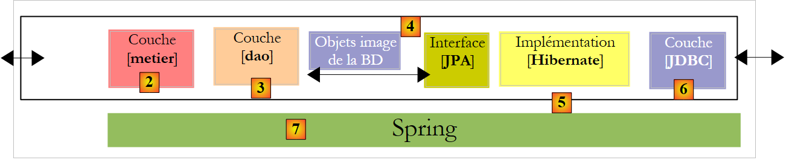 |
Si presume che il lettore abbia una conoscenza di base di Spring. In caso contrario, è possibile consultare il seguente documento, che illustra il concetto di iniezione di dipendenze, elemento centrale di Spring:
[rif3]: Spring IoC (Inversione di controllo) [http://tahe.developpez.com/java/springioc].
3.1.1. Il progetto Eclipse/Spring/Hibernate " "
Il progetto Eclipse è il seguente:
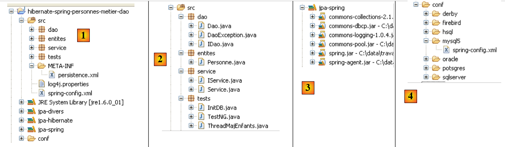 |
 |
- in [1]: il progetto Eclipse. È disponibile in [6] negli esempi del tutorial [5]. Lo importeremo.
- in [2]: il codice Java per i livelli presentato nei pacchetti:
- [entities]: il pacchetto delle entità JPA
- [dao]: il livello di accesso ai dati, basato sul livello JPA
- [service]: un livello di servizio piuttosto che un livello di business. Qui useremo il servizio di transazione del container.
- [tests]: contiene i programmi di test.
- in [3]: la libreria [jpa-spring] contiene i JAR richiesti da Spring (vedi anche [7] e [8]).
- in [4]: la cartella [conf] contiene i file di configurazione Spring per ciascuno dei DBMS utilizzati in questo tutorial.
3.1.2. n Entità JPA
 |
Qui viene gestita una sola entità, l'entità Person discussa nella Sezione 2.1, la cui configurazione è riportata di seguito:
package entites;
...
@Entity
@Table(name="jpa01_hb_personne")
public class Personne {
@Id
@Column(name = "ID", nullable = false)
@GeneratedValue(strategy = GenerationType.AUTO)
private Integer id;
@Column(name = "VERSION", nullable = false)
@Version
private int version;
@Column(name = "NOM", length = 30, nullable = false, unique = true)
private String nom;
@Column(name = "PRENOM", length = 30, nullable = false)
private String prenom;
@Column(name = "DATENAISSANCE", nullable = false)
@Temporal(TemporalType.DATE)
private Date datenaissance;
@Column(name = "MARIE", nullable = false)
private boolean marie;
@Column(name = "NBENFANTS", nullable = false)
private int nbenfants;
// manufacturers
public Personne() {
}
public Personne(String nom, String prenom, Date datenaissance, boolean marie,
int nbenfants) {
...
}
// toString
public String toString() {
return String.format("[%d,%d,%s,%s,%s,%s,%d]", getId(), getVersion(),
getNom(), getPrenom(), new SimpleDateFormat("dd/MM/yyyy")
.format(getDatenaissance()), isMarie(), getNbenfants());
}
// getters and setters
...
}
3.1.3. Il livello [ DAO]
 |  |
Il livello [DAO] fornisce la seguente interfaccia IDao:
package dao;
import java.util.List;
import entites.Personne;
public interface IDao {
// find a person via his/her login
public Personne getOne(Integer id);
// get all the people
public List<Personne> getAll();
// save a person
public Personne saveOne(Personne personne);
// update a person
public Personne updateOne(Personne personne);
// delete a person via his/her login
public void deleteOne(Integer id);
// get people whose name corresponds to a model
public List<Personne> getAllLike(String modele);
}
L'implementazione [Dao] di questa interfaccia è la seguente:
package dao;
import java.util.List;
import javax.persistence.EntityManager;
import javax.persistence.PersistenceContext;
import entites.Personne;
public class Dao implements IDao {
@PersistenceContext
private EntityManager em;
// supprimer une personne via son identifiant
public void deleteOne(Integer id) {
Personne personne = em.find(Personne.class, id);
if (personne == null) {
throw new DaoException(2);
}
em.remove(personne);
}
@SuppressWarnings("unchecked")
// obtenir toutes les personnes
public List<Personne> getAll() {
return em.createQuery("select p from Personne p").getResultList();
}
@SuppressWarnings("unchecked")
// obtenir les personnes dont le nom correspond àun modèle
public List<Personne> getAllLike(String modele) {
return em.createQuery("select p from Personne p where p.nom like :modele")
.setParameter("modele", modele).getResultList();
}
// obtenir une personne via son identifiant
public Personne getOne(Integer id) {
return em.find(Personne.class, id);
}
// sauvegarder une personne
public Personne saveOne(Personne personne) {
em.persist(personne);
return personne;
}
// mettre à jour une personne
public Personne updateOne(Personne personne) {
return em.merge(personne);
}
}
- Innanzitutto, si noti la semplicità dell'implementazione di [Dao]. Ciò è dovuto all'uso del livello JPA, che gestisce la maggior parte del lavoro di accesso ai dati.
- Riga 10: La classe [Dao] implementa l'interfaccia [IDao]
- Riga 13: L'oggetto [EntityManager] verrà utilizzato per manipolare il contesto di persistenza JPA. Per comodità, a volte ci riferiremo ad esso come al contesto di persistenza stesso. Il contesto di persistenza conterrà entità Person.
- Riga 12: il campo [EntityManager em] non viene inizializzato in nessuna parte del codice. Verrà inizializzato da Spring all'avvio dell'applicazione. È l'annotazione JPA @PersistenceContext alla riga 12 che indica a Spring di iniettare un gestore del contesto di persistenza in em.
- Righe 26–28: L'elenco di tutte le persone viene ottenuto tramite una query JPQL.
- Righe 32–35: L'elenco di tutte le persone i cui nomi corrispondono a un determinato modello viene recuperato tramite una query JPQL.
- Righe 38–40: La persona con un determinato ID viene recuperata utilizzando il metodo `find` dell'API JPA. Restituisce un puntatore nullo se la persona non esiste.
- Righe 43–46: Una persona viene resa persistente utilizzando il metodo `persist` dell'API JPA. Il metodo rende la persona persistente.
- Righe 49–51: Una persona viene aggiornata utilizzando il metodo `merge` dell'API JPA. Questo metodo ha senso solo se la persona che viene aggiornata era stata precedentemente distaccata. Il metodo rende persistente la persona creata in questo modo.
- Righe 16–22: L'eliminazione della persona il cui ID viene passato come parametro avviene in due passaggi:
- Riga 17: Viene cercata nel contesto di persistenza
- Righe 18–20: Se non viene trovata, viene generata un'eccezione con codice di errore 2
- Riga 21: se viene trovata, viene rimossa dal contesto di persistenza utilizzando il metodo remove dell'API JPA.
- Ciò che non è visibile a questo punto è che ogni metodo verrà eseguito all'interno di una transazione avviata dal livello [service].
L'applicazione dispone di un proprio tipo di eccezione denominato [DaoException]:
package dao;
@SuppressWarnings("serial")
public class DaoException extends RuntimeException {
// error code
private int code;
public DaoException(int code) {
super();
this.code = code;
}
public DaoException(String message, int code) {
super(message);
this.code = code;
}
public DaoException(Throwable cause, int code) {
super(cause);
this.code = code;
}
public DaoException(String message, Throwable cause, int code) {
super(message, cause);
this.code = code;
}
// getter and setter
public int getCode() {
return code;
}
public void setCode(int code) {
this.code = code;
}
}
- Riga 4: [DaoException] estende [RuntimeException]. Si tratta quindi di un tipo di eccezione che il compilatore non richiede di gestire con un blocco try/catch né di includere nelle firme dei metodi. Per questo motivo, [DaoException] non è inclusa nella firma del metodo [deleteOne] dell'interfaccia [IDao]. Ciò consente all'interfaccia di essere implementata da una classe che genera un diverso tipo di eccezione, a condizione che derivi anch'essa da [RuntimeException].
- Per distinguere tra gli errori che possono verificarsi, utilizziamo il codice di errore alla riga 7. I tre costruttori alle righe 14, 19 e 24 sono quelli della classe padre [RuntimeException], a cui abbiamo aggiunto un parametro: il codice di errore che vogliamo assegnare all'eccezione.
3.1.4. Il livello [business/ service]
 |
Il livello [service] fornisce la seguente interfaccia [IService]:
package service;
import java.util.List;
import entites.Personne;
public interface IService {
// find a person via his/her login
public Personne getOne(Integer id);
// get all the people
public List<Personne> getAll();
// save a person
public Personne saveOne(Personne personne);
// update a person
public Personne updateOne(Personne personne);
// delete a person via his/her login
public void deleteOne(Integer id);
// get people whose names match a model
public List<Personne> getAllLike(String modele);
// delete several people at once
public void deleteArray(Personne[] personnes);
// save several people at once
public Personne[] saveArray(Personne[] personnes);
// update several people at once
public Personne[] updateArray(Personne[] personnes);
}
- righe 8–24: l'interfaccia [IService] eredita i metodi dall'interfaccia [IDao]
- riga 27: il metodo [deleteArray] consente di eliminare un insieme di persone all'interno di una transazione: o vengono eliminate tutte le persone o nessuna.
- Righe 30 e 33: metodi analoghi a [deleteArray] per salvare (riga 30) o aggiornare (riga 33) un insieme di persone all'interno di una transazione.
L'implementazione [Service] dell'interfaccia [IService] è la seguente:
package service;
...
// all class methods take place in a transaction
@Transactional
public class Service implements IService {
// layer [dao]
private IDao dao;
public IDao getDao() {
return dao;
}
public void setDao(IDao dao) {
this.dao = dao;
}
// delete several people at once
public void deleteArray(Personne[] personnes) {
for (Personne p : personnes) {
dao.deleteOne(p.getId());
}
}
// delete a person via his/her login
public void deleteOne(Integer id) {
dao.deleteOne(id);
}
// get all the people
public List<Personne> getAll() {
return dao.getAll();
}
// get people whose names match a model
public List<Personne> getAllLike(String modele) {
return dao.getAllLike(modele);
}
// find a person via his/her login
public Personne getOne(Integer id) {
return dao.getOne(id);
}
// save several people at once
public Personne[] saveArray(Personne[] personnes) {
Personne[] personnes2 = new Personne[personnes.length];
for (int i = 0; i < personnes.length; i++) {
personnes2[i] = dao.saveOne(personnes[i]);
}
return personnes2;
}
// save a person
public Personne saveOne(Personne personne) {
return dao.saveOne(personne);
}
// update several people at once
public Personne[] updateArray(Personne[] personnes) {
Personne[] personnes2 = new Personne[personnes.length];
for (int i = 0; i < personnes.length; i++) {
personnes2[i] = dao.updateOne(personnes[i]);
}
return personnes2;
}
// update a person
public Personne updateOne(Personne personne) {
return dao.updateOne(personne);
}
}
- Riga 6: L'annotazione Spring @Transactional indica che tutti i metodi della classe devono essere eseguiti all'interno di una transazione. Una transazione verrà avviata prima che il metodo inizi l'esecuzione e chiusa dopo l'esecuzione. Se durante l'esecuzione del metodo si verifica un'eccezione di tipo [RuntimeException] o di una sottoclasse, un rollback automatico annulla l'intera transazione; in caso contrario, un commit automatico la convalida. Si noti che il codice Java non deve preoccuparsi delle transazioni. Queste sono gestite da Spring.
- Riga 10: un riferimento al livello [dao]. Vedremo in seguito che questo riferimento viene inizializzato da Spring all'avvio dell'applicazione.
- I metodi di [Service] chiamano semplicemente i metodi dell'interfaccia [IDao dao] dalla riga 10. Lasceremo al lettore il compito di esaminare il codice. Non ci sono particolari difficoltà.
- Abbiamo menzionato in precedenza che ogni metodo di [Service] viene eseguito all'interno di una transazione. Questa transazione è associata al thread di esecuzione del metodo. All'interno di questo thread vengono eseguiti i metodi del livello [dao]. Questi saranno automaticamente associati alla transazione del thread di esecuzione. Il metodo [deleteArray] (riga 21), ad esempio, deve eseguire il metodo [deleteOne] del livello [dao] N volte. Queste N esecuzioni avranno luogo all'interno del thread di esecuzione del metodo [deleteArray] e quindi all'interno della stessa transazione. Pertanto, se tutto va bene, verranno tutte confermate, oppure verranno tutte annullate se si verifica un'eccezione in una qualsiasi delle N esecuzioni del metodo [deleteOne] nel livello [dao].
3.1.5. Configurazione dei livelli
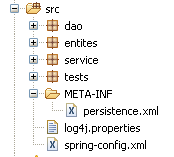 |  |
La configurazione dei livelli [service], [dao] e [JPA] è gestita dai due file sopra menzionati: [META-INF/persistence.xml] e [spring-config.xml]. Entrambi i file devono trovarsi nel classpath dell'applicazione; per questo motivo sono collocati nella cartella [src] del progetto Eclipse. Il nome del file [spring-config.xml] è arbitrario.
persistence.xml
<?xml version="1.0" encoding="UTF-8"?>
<persistence version="1.0" xmlns="http://java.sun.com/xml/ns/persistence" xmlns:xsi="http://www.w3.org/2001/XMLSchema-instance"
xsi:schemaLocation="http://java.sun.com/xml/ns/persistence http://java.sun.com/xml/ns/persistence/persistence_1_0.xsd">
<persistence-unit name="jpa" transaction-type="RESOURCE_LOCAL" />
</persistence>
- Riga 4: Il file dichiara un'unità di persistenza denominata jpa che utilizza transazioni "locali", ovvero transazioni non fornite da un contenitore EJB3. Queste transazioni vengono create e gestite da Spring e sono configurate nel file [spring-config.xml].
spring-config.xml
<?xml version="1.0" encoding="UTF-8"?>
<beans xmlns="http://www.springframework.org/schema/beans"
xmlns:xsi="http://www.w3.org/2001/XMLSchema-instance"
xmlns:tx="http://www.springframework.org/schema/tx"
xsi:schemaLocation="http://www.springframework.org/schema/beans http://www.springframework.org/schema/beans/spring-beans-2.0.xsd http://www.springframework.org/schema/tx http://www.springframework.org/schema/tx/spring-tx-2.0.xsd">
<!-- application layers -->
<bean id="dao" class="dao.Dao" />
<bean id="service" class="service.Service">
<property name="dao" ref="dao" />
</bean>
<!-- persistence layer JPA -->
<bean id="entityManagerFactory"
class="org.springframework.orm.jpa.LocalContainerEntityManagerFactoryBean">
<property name="dataSource" ref="dataSource" />
<property name="jpaVendorAdapter">
<bean
class="org.springframework.orm.jpa.vendor.HibernateJpaVendorAdapter">
<!--
<property name="showSql" value="true" />
-->
<property name="databasePlatform"
value="org.hibernate.dialect.MySQL5InnoDBDialect" />
<property name="generateDdl" value="true" />
</bean>
</property>
<property name="loadTimeWeaver">
<bean
class="org.springframework.instrument.classloading.InstrumentationLoadTimeWeaver" />
</property>
</bean>
<!-- data source DBCP -->
<bean id="dataSource"
class="org.apache.commons.dbcp.BasicDataSource"
destroy-method="close">
<property name="driverClassName" value="com.mysql.jdbc.Driver" />
<property name="url" value="jdbc:mysql://localhost:3306/jpa" />
<property name="username" value="jpa" />
<property name="password" value="jpa" />
</bean>
<!-- transaction manager -->
<tx:annotation-driven transaction-manager="txManager" />
<bean id="txManager"
class="org.springframework.orm.jpa.JpaTransactionManager">
<property name="entityManagerFactory"
ref="entityManagerFactory" />
</bean>
<!-- translation of exceptions -->
<bean
class="org.springframework.dao.annotation.PersistenceExceptionTranslationPostProcessor" />
<!-- persistence annotations -->
<bean
class="org.springframework.orm.jpa.support.PersistenceAnnotationBeanPostProcessor" />
</beans>
- righe 2-5: il tag radice <beans> del file di configurazione. Non commenteremo i vari attributi di questo tag. Assicurati di copiarli e incollarli con attenzione, poiché un errore in uno qualsiasi di questi attributi può causare errori a volte difficili da comprendere.
- riga 8: il bean "dao" è un riferimento a un'istanza della classe [dao.Dao]. Verrà creata una singola istanza (singleton) che implementerà il livello [dao] dell'applicazione.
- Righe 9–11: istanziazione del livello [service]. Il bean "service" è un riferimento a un'istanza della classe [service.Service]. Verrà creata una singola istanza (singleton) che implementerà il livello [service] dell'applicazione. Abbiamo visto che la classe [service.Service] aveva un campo privato [IDao dao]. Questo campo viene inizializzato alla riga 10 dal bean "dao" definito alla riga 8.
- In definitiva, le righe 8–11 hanno configurato i livelli [dao] e [service]. Vedremo più avanti quando e come verranno istanziati.
- Righe 35–42: viene definita una fonte di dati. Abbiamo già affrontato il concetto di fonte di dati quando abbiamo studiato le entità JPA con Hibernate:
 |
In precedenza, [c3p0], indicato come "pool di connessioni", avrebbe potuto essere definito una "fonte di dati". Una fonte di dati fornisce il servizio di "pool di connessioni". Con Spring, useremo una fonte di dati diversa da [c3p0]. Si tratta di [DBCP] del progetto Apache Commons DBCP [http://jakarta.apache.org/commons/dbcp/]. Gli archivi [DBCP] sono stati inseriti nella libreria utente [jpa-spring]:
 |
- righe 38–41: Per stabilire connessioni con il database di destinazione, la fonte dati deve conoscere il driver JDBC utilizzato (riga 38), l'URL del database (riga 39), il nome utente di connessione e la relativa password (righe 40–41).
- righe 14–32: configurazione del livello JPA
- righe 14–15: definiscono un bean [EntityManagerFactory] in grado di creare oggetti [EntityManager] per gestire i contesti di persistenza. La classe istanziata [LocalContainerEntityManagerFactoryBean] è fornita da Spring. Richiede una serie di parametri per l'istanziazione, definiti nelle righe 16–31.
- riga 16: l'origine dati da utilizzare per ottenere connessioni al DBMS. Si tratta dell'origine [DBCP] definita nelle righe 35-42.
- Righe 17–27: l'implementazione JPA da utilizzare
- Righe 18–26: definiscono Hibernate (riga 19) come l'implementazione JPA da utilizzare
- Righe 23–24: il dialetto SQL che Hibernate deve utilizzare con il DBMS di destinazione, in questo caso MySQL5.
- Riga 25: richiede che il database venga generato (drop e create) all'avvio dell'applicazione.
- Righe 28–31: definiscono un “class loader”. Non sono in grado di spiegare chiaramente il ruolo di questo bean utilizzato dall’EntityManagerFactory nel livello JPA. Tuttavia, comporta il passaggio alla JVM che esegue l’applicazione del nome di un archivio il cui contenuto gestirà il caricamento delle classi all’avvio dell’applicazione. In questo caso, l'archivio è [spring-agent.jar], situato nella libreria utente [jpa-spring] (vedi sopra). Vedremo che Hibernate non ha bisogno di questo agente, mentre Toplink sì.
- Righe 45–50: definiscono il gestore delle transazioni da utilizzare
- Riga 45: indica che le transazioni sono gestite utilizzando le annotazioni Java (avrebbero potuto essere dichiarate anche in spring-config.xml). Nello specifico, questo si riferisce all'annotazione @Transactional presente nella classe [Service] (riga 6).
- Righe 46–50: il gestore delle transazioni
- Riga 47: il gestore delle transazioni è una classe fornita da Spring
- righe 48–49: il gestore delle transazioni di Spring deve conoscere l'EntityManagerFactory che gestisce il livello JPA. Si tratta di quella definita nelle righe 14–32.
- Righe 57–58: definiscono la classe che gestisce le annotazioni di persistenza di Spring presenti nel codice Java, come l'annotazione @PersistenceContext nella classe [dao.Dao] (riga 12).
- Righe 53–54: definiscono la classe Spring che gestisce, in particolare, l'annotazione @Repository, che rende una classe annotata in questo modo idonea alla traduzione delle eccezioni native dal driver JDBC del DBMS in eccezioni Spring generiche di tipo [DataAccessException]. Questa traduzione incapsula l'eccezione JDBC nativa in un tipo [DataAccessException] con varie sottoclassi:

Questa traduzione consente al programma client di gestire le eccezioni in modo generico indipendentemente dal DBMS di destinazione. Non abbiamo utilizzato l'annotazione @Repository nel nostro codice Java. Pertanto, le righe 53–54 non sono necessarie. Le abbiamo lasciate semplicemente a scopo informativo.
Abbiamo finito con il file di configurazione Spring. È complesso e molti aspetti rimangono poco chiari. È stato preso dalla documentazione di Spring. Fortunatamente, adattarlo a varie situazioni spesso si riduce a due modifiche:
- il database di destinazione: righe 38–41. Forniremo un esempio Oracle.
- l'implementazione JPA: righe 14–32. Forniremo un esempio TopLink.
3.1.6. Programma client [ InitDB]
Ora scriveremo un primo client per l'architettura sopra descritta:
 |
Il codice per [InitDB] è il seguente:
package tests;
...
public class InitDB {
// service layer
private static IService service;
// manufacturer
public static void main(String[] args) throws ParseException {
// application configuration
ApplicationContext ctx = new ClassPathXmlApplicationContext("spring-config.xml");
// service layer
service = (IService) ctx.getBean("service");
// empty the base
clean();
// fill it
fill();
// a visual check
dumpPersonnes();
}
// table content display
private static void dumpPersonnes() {
System.out.format("[personnes]%n");
for (Personne p : service.getAll()) {
System.out.println(p);
}
}
// table filling
public static void fill() throws ParseException {
// creating people
Personne p1 = new Personne("p1", "Paul", new SimpleDateFormat("dd/MM/yy").parse("31/01/2000"), true, 2);
Personne p2 = new Personne("p2", "Sylvie", new SimpleDateFormat("dd/MM/yy").parse("05/07/2001"), false, 0);
// we save
service.saveArray(new Personne[] { p1, p2 });
}
// deleting table items
public static void clean() {
for (Personne p : service.getAll()) {
service.deleteOne(p.getId());
}
}
}
- Riga 12: Il file [spring-config.xml] viene utilizzato per creare un oggetto [ApplicationContext ctx], che è una rappresentazione in memoria del file. I bean definiti in [spring-config.xml] vengono istanziati a questo punto.
- riga 14: al contesto dell'applicazione ctx viene richiesto un riferimento al livello [service]. Sappiamo che questo è rappresentato da un bean denominato "service".
- Riga 16: il database viene svuotato utilizzando il metodo clean nelle righe 41–45:
- Righe 42–44: richiediamo l'elenco di tutti gli utenti dal contesto di persistenza e li scorriamo in un ciclo per eliminarli uno per uno. Ricorderete che [spring-config.xml] specifica che il database deve essere generato all'avvio dell'applicazione. Pertanto, nel nostro caso, la chiamata al metodo `clean` non è necessaria poiché partiamo da un database vuoto.
- Riga 18: il metodo fill popola il database. Questo è definito nelle righe 32–38:
- Righe 34–35: Vengono create due persone
- riga 37: al livello [service] viene richiesto di renderle persistenti.
- Riga 20: Il metodo `dumpPersonnes` visualizza le persone persistenti. È definito alle righe 24–29
- Righe 26–28: Richiediamo l'elenco di tutte le persone persistenti dal livello [service] e le visualizziamo sulla console.
L'esecuzione di [InitDB] produce il seguente risultato:
3.1.7. Test unitari [ TestNG]
L'installazione del plugin [TestNG] è descritta nella sezione 5.2.4. Il codice del programma [TestNG] è il seguente:
package tests;
....
public class TestNG {
// service layer
private IService service;
@BeforeClass
public void init() {
// log
log("init");
// application configuration
ApplicationContext ctx = new ClassPathXmlApplicationContext("spring-config.xml");
// service layer
service = (IService) ctx.getBean("service");
}
@BeforeMethod
public void setUp() throws ParseException {
// empty the base
clean();
// fill it
fill();
}
// logs
private void log(String message) {
System.out.println("----------- " + message);
}
// table content display
private void dump() {
log("dump");
System.out.format("[personnes]%n");
for (Personne p : service.getAll()) {
System.out.println(p);
}
}
// table filling
public void fill() throws ParseException {
log("fill");
// creating people
Personne p1 = new Personne("p1", "Paul", new SimpleDateFormat("dd/MM/yy").parse("31/01/2000"), true, 2);
Personne p2 = new Personne("p2", "Sylvie", new SimpleDateFormat("dd/MM/yy").parse("05/07/2001"), false, 0);
// we save
service.saveArray(new Personne[] { p1, p2 });
}
// deleting table items
public void clean() {
log("clean");
for (Personne p : service.getAll()) {
service.deleteOne(p.getId());
}
}
@Test()
public void test01() {
...
}
...
}
- riga 9: L'annotazione @BeforeClass indica il metodo da eseguire per inizializzare la configurazione necessaria per i test. Viene eseguito prima dell'esecuzione del primo test. L'annotazione @AfterClass, che qui non viene utilizzata, indica il metodo da eseguire una volta che tutti i test sono stati eseguiti.
- righe 10–17: Il metodo init, annotato con @BeforeClass, utilizza il file di configurazione Spring per istanziare i vari livelli dell'applicazione e ottenere un riferimento al livello [service]. Tutti i test utilizzano quindi questo riferimento.
- Riga 19: L'annotazione @BeforeMethod indica il metodo da eseguire prima di ogni test. L'annotazione @AfterMethod, qui non utilizzata, indica il metodo da eseguire dopo ogni test.
- Righe 20–25: Il metodo setUp, annotato con @BeforeMethod, cancella il database (righe 52–56) e poi lo popola con due persone (righe 42–49).
- Riga 59: L'annotazione @Test indica un metodo di test da eseguire. Ora descriveremo questi test.
@Test()
public void test01() {
log("test1");
dump();
// list of persons
List<Personne> personnes = service.getAll();
assert 2 == personnes.size();
}
@Test()
public void test02() {
log("test2");
// search for people by name
List<Personne> personnes = service.getAllLike("p1%");
assert 1 == personnes.size();
Personne p1 = personnes.get(0);
assert "Paul".equals(p1.getPrenom());
}
@Test()
public void test03() throws ParseException {
log("test3");
// create a new person
Personne p3 = new Personne("p3", "x", new SimpleDateFormat("dd/MM/yy").parse("05/07/2001"), false, 0);
// we keep it
service.saveOne(p3);
// we ask for it again
Personne loadedp3 = service.getOne(p3.getId());
// we display it
System.out.println(loadedp3);
// check
assert "p3".equals(loadedp3.getNom());
}
- righe 2–8: Test 01. Ricorda che all'inizio di ogni test, il database contiene due persone chiamate p1 e p2.
- riga 6: richiediamo l'elenco delle persone
- riga 7: verifichiamo che il numero di persone nell'elenco restituito sia 2
- riga 14: richiediamo l'elenco delle persone il cui cognome inizia con p1
- Verifichiamo che l'elenco risultante abbia un solo elemento (riga 15) e che il nome della singola persona trovata sia "Paul" (riga 17)
- riga 24: creiamo una persona denominata p3
- riga 25: la salviamo
- riga 28: la recuperiamo dal contesto di persistenza per la verifica
- riga 32: verifichiamo che la persona recuperata abbia effettivamente il nome p3.
@Test()
public void test04() throws ParseException {
log("test4");
// we load person p1
List<Personne> personnes = service.getAllLike("p1%");
Personne p1 = personnes.get(0);
// we display it
System.out.println(p1);
// we check
assert "p1".equals(p1.getNom());
int version1 = p1.getVersion();
// change the first name
p1.setPrenom("x");
// we save
service.updateOne(p1);
// recharge
p1 = service.getOne(p1.getId());
// we display it
System.out.println(p1);
// check that the version has been incremented
assert (version1 + 1) == p1.getVersion();
}
- riga 5: chiediamo la persona p1
- riga 10: controlliamo il suo nome
- riga 11: annotiamo il suo numero di versione
- riga 13: modifichiamo il suo nome
- riga 15: salviamo la modifica
- riga 17: richiediamo nuovamente la persona p1
- riga 21: controlliamo che il numero di versione sia aumentato di 1
@Test()
public void test05() {
log("test5");
// we load person p2
List<Personne> personnes = service.getAllLike("p2%");
Personne p2 = personnes.get(0);
// we display it
System.out.println(p2);
// we check
assert "p2".equals(p2.getNom());
// delete person p2
service.deleteOne(p2.getId());
// recharge it
p2 = service.getOne(p2.getId());
// check that a null pointer has been obtained
assert null == p2;
// table is displayed
dump();
}
- riga 5: chiediamo la persona p2
- riga 10: controlliamo il suo nome
- riga 12: la eliminiamo
- riga 14: la richiediamo di nuovo
- riga 16: controlliamo di non averla trovata
@Test()
public void test06() throws ParseException {
log("test6");
// on crée un tableau de 2 personnes de même nom (enfreint la règle d'unicité du nom)
Personne[] personnes = { new Personne("p3", "x", new SimpleDateFormat("dd/MM/yy").parse("31/01/2000"), true, 2),
new Personne("p4", "x", new SimpleDateFormat("dd/MM/yy").parse("31/01/2000"), true, 2),
new Personne("p4", "x", new SimpleDateFormat("dd/MM/yy").parse("31/01/2000"), true, 2)};
// on sauvegarde ce tableau - on doit obtenir une exception et un rollback
boolean erreur = false;
try {
service.saveArray(personnes);
} catch (RuntimeException e) {
erreur = true;
}
// dump
dump();
// vérifications
assert erreur;
// recherche personne de nom p3
List<Personne> personnesp3 = service.getAllLike("p3%");
assert 0 == personnesp3.size();
// dump
dump();
}
- Riga 5: creiamo un array di tre persone, due delle quali hanno lo stesso nome "p4". Ciò viola la regola di unicità per il nome @Entity Person:
@Column(name = "NOM", length = 30, nullable = false, unique = true)
private String nom;
- riga 11: l'array di tre persone viene inserito nel contesto di persistenza. L'aggiunta della seconda persona, p4, dovrebbe fallire. Poiché il metodo [saveArray] viene eseguito all'interno di una transazione, qualsiasi inserimento effettuato in precedenza verrà annullato. Alla fine, non verrà effettuata alcuna aggiunta.
- Riga 18: verifichiamo che [saveArray] abbia effettivamente generato un'eccezione
- Righe 20–21: verifichiamo che la persona p3, che avrebbe potuto essere aggiunta, non sia stata aggiunta.
@Test()
public void test07() {
log("test7");
// test optimistic locking
// we load person p1
List<Personne> personnes = service.getAllLike("p1%");
Personne p1 = personnes.get(0);
// we display it
System.out.println(p1);
// increase the number of children
int nbEnfants1 = p1.getNbenfants();
p1.setNbenfants(nbEnfants1 + 1);
// save p1
Personne newp1 = service.updateOne(p1);
assert (nbEnfants1 + 1) == newp1.getNbenfants();
System.out.println(newp1);
// we save a second time - we should have an exception because p1 no longer has the correct version
// newp1 has it
boolean erreur = false;
try {
service.updateOne(p1);
} catch (RuntimeException e) {
erreur = true;
}
// check
assert erreur;
// we increase the number of newp1 children
int nbEnfants2 = newp1.getNbenfants();
newp1.setNbenfants(nbEnfants2 + 1);
// save newp1
service.updateOne(newp1);
// recharge
p1 = service.getOne(p1.getId());
// we check
assert (nbEnfants1 + 2) == p1.getNbenfants();
System.out.println(p1);
}
- Riga 6: Richiedi la persona p1
- riga 12: aumentiamo il numero di figli di 1
- riga 14: aggiorniamo la persona p1 nel contesto di persistenza. Il metodo [updateOne] rende persistente la nuova versione newp1 a partire da p1. Si differenzia da p1 per il numero di versione, che deve essere stato incrementato.
- riga 15: controlliamo il numero di figli per newp1.
- riga 21: richiediamo un aggiornamento della persona p1 basato sulla vecchia versione p1. Dovrebbe verificarsi un'eccezione perché p1 non è l'ultima versione della persona p1. L'ultima versione è newp1.
- Riga 23: verifichiamo che l'errore si sia effettivamente verificato
- Righe 27–35: verifichiamo che, se l'aggiornamento viene eseguito dalla versione più recente newp1, tutto funzioni correttamente.
@Test()
public void test08() {
log("test8");
// test rollback on updateArray
// we load person p1
List<Personne> personnes = service.getAllLike("p1%");
Personne p1 = personnes.get(0);
// we display it
System.out.println(p1);
// increase the number of children
int nbEnfants1 = p1.getNbenfants();
p1.setNbenfants(nbEnfants1 + 1);
// save 2 modifications, the 2nd of which must fail (person incorrectly initialized)
// because of the transaction, both must be cancelled
boolean erreur = false;
try {
service.updateArray(new Personne[] { p1, new Personne() });
} catch (RuntimeException e) {
erreur = true;
}
// checks
assert erreur;
// we recharge person p1
personnes = service.getAllLike("p1%");
p1 = personnes.get(0);
// her number of children must not have changed
assert nbEnfants1 == p1.getNbenfants();
}
- Il Test 8 è simile al Test 6: verifica il rollback su un'operazione `updateArray` eseguita su un array di due persone in cui la seconda persona non è stata inizializzata correttamente. Dal punto di vista JPA, l'operazione `merge` sulla seconda persona — che non esiste ancora — genererà un'istruzione SQL `insert` che fallirà a causa dei vincoli `nullable=false` su alcuni dei campi dell'entità `Person`.
@Test()
public void test09() {
log("test9");
// test rollback on deleteArray
// dump
dump();
// we load person p1
List<Personne> personnes = service.getAllLike("p1%");
Personne p1 = personnes.get(0);
// we display it
System.out.println(p1);
// we make 2 deletions, the 2nd of which must fail (unknown person)
// because of the transaction, both must be cancelled
boolean erreur = false;
try {
service.deleteArray(new Personne[] { p1, new Personne() });
} catch (RuntimeException e) {
erreur = true;
}
// checks
assert erreur;
// we recharge person p1
personnes = service.getAllLike("p1%");
// check
assert 1 == personnes.size();
// dump
dump();
}
- Il test 9 è simile al precedente: verifica il rollback su un'operazione `deleteArray` su un array di due persone in cui la seconda persona non esiste. Tuttavia, in questo caso, il metodo `[deleteOne]` nel livello `[dao]` genera un'eccezione.
// optimistic locking - multi-threaded access
@Test()
public void test10() throws Exception {
// add a person
Personne p3 = new Personne("X", "X", new SimpleDateFormat("dd/MM/yyyy").parse("01/02/2006"), true, 0);
service.saveOne(p3);
int id3 = p3.getId();
// creation of N threads for updating the number of children
final int N = 20;
Thread[] taches = new Thread[N];
for (int i = 0; i < taches.length; i++) {
taches[i] = new ThreadMajEnfants("thread n° " + i, service, id3);
taches[i].start();
}
// we wait for the end of threads
for (int i = 0; i < taches.length; i++) {
taches[i].join();
}
// we pick up the person
p3 = service.getOne(id3);
// she must have N children
assert N == p3.getNbenfants();
// delete person p3
service.deleteOne(p3.getId());
// check
p3 = service.getOne(p3.getId());
// we must have a null pointer
assert p3 == null;
}
- L'idea alla base del Test 10 è quella di avviare N thread (riga 9) per incrementare in parallelo il numero di figli di una persona. Vogliamo verificare che il sistema di numerazione delle versioni sia in grado di gestire questo scenario. È stato creato proprio a questo scopo.
- Righe 5–6: viene creata e salvata una persona denominata p3. Inizialmente ha 0 figli.
- Riga 7: Registriamo il suo identificatore.
- Righe 9–14: avviamo N thread in parallelo, ciascuno con il compito di incrementare di 1 il numero di figli di p3.
- Righe 16–18: attendiamo che tutti i thread terminino
- Riga 20: chiediamo di vedere la persona p3
- riga 22: verifichiamo che p3 abbia ora N figli
- riga 24: la persona p3 viene eliminata.
Il thread [ThreadMajEnfants] è il seguente:
package tests;
...
public class ThreadMajEnfants extends Thread {
// thread name
private String name;
// reference on the [service] layer
private IService service;
// the id of the person we're going to work on
private int idPersonne;
// manufacturer
public ThreadMajEnfants(String name, IService service, int idPersonne) {
this.name = name;
this.service = service;
this.idPersonne = idPersonne;
}
// thread core
public void run() {
// follow-up
suivi("lancé");
// we loop until we have succeeded in incrementing by 1
// person's number of children idPersonne
boolean fini = false;
int nbEnfants = 0;
while (!fini) {
// a copy of the idPersonne person is retrieved
Personne personne = service.getOne(idPersonne);
nbEnfants = personne.getNbenfants();
// follow-up
suivi("" + nbEnfants + " -> " + (nbEnfants + 1) + " pour la version " + personne.getVersion());
// increments the number of children by 1
personne.setNbenfants(nbEnfants + 1);
// 10 ms wait to abandon processor
try {
// follow-up
suivi("début attente");
// we pause to let the processor
Thread.sleep(10);
// follow-up
suivi("fin attente");
} catch (Exception ex) {
throw new RuntimeException(ex.toString());
}
// waiting complete - try to validate the copy
// in the meantime, other threads may have modified the original
try {
// we try to modify the original
service.updateOne(personne);
// we passed - the original has been modified
fini = true;
} catch (javax.persistence.OptimisticLockException e) {
// incorrect object version: exception ignored to start again
} catch (org.springframework.transaction.UnexpectedRollbackException e2) {
// with the occasional Spring exception
} catch (RuntimeException e3) {
// another type of exception - it is reassembled
throw e3;
}
}
// follow-up
suivi("a terminé et passé le nombre d'enfants à " + (nbEnfants + 1));
}
// follow-up
private void suivi(String message) {
System.out.println(name + " [" + new Date().getTime() + "] : " + message);
}
}
- righe 15–19: il costruttore memorizza le informazioni necessarie al suo funzionamento: il proprio nome (riga 16), il riferimento al livello [service] che deve utilizzare (riga 17) e l'identificatore della persona p il cui numero di figli deve incrementare (riga 18).
- righe 22–66: il metodo [run] viene eseguito da tutti i thread in parallelo.
- riga 29: il thread tenta ripetutamente di incrementare il numero di figli della persona p. Si ferma solo quando ci riesce.
- riga 31: viene interrogata la persona p
- riga 36: il numero dei suoi figli viene incrementato in memoria
- righe 38–47: viene effettuata una pausa di 10 ms. Ciò consentirà ad altri thread di ottenere la stessa versione della persona p. Pertanto, contemporaneamente, diversi thread manterranno la stessa versione della persona p e vorranno modificarla. Questo è il comportamento desiderato.
- Riga 52: una volta terminata la pausa, il thread chiede al livello [service] di salvare la modifica. Sappiamo che di tanto in tanto si verificheranno delle eccezioni, quindi abbiamo racchiuso l'operazione in un blocco try/catch.
- Riga 55: I test mostrano che si verificano eccezioni di tipo [javax.persistence.OptimisticLockException]. Questo è normale: si tratta dell'eccezione generata dal livello JPA quando un thread tenta di modificare la persona p senza disporre della sua versione più recente. Questa eccezione viene ignorata per consentire al thread di riprovare l'operazione fino a quando non va a buon fine.
- Riga 57: I test mostrano che otteniamo anche eccezioni di tipo [org.springframework.transaction.UnexpectedRollbackException]. Questo è fastidioso e inaspettato. Io non ho una spiegazione per questo. Ora dipendiamo da Spring, anche se volevamo evitarlo. Ciò significa che se eseguiamo la nostra applicazione in JBoss EJB3, ad esempio, il codice del thread dovrà essere modificato. Anche l'eccezione Spring viene ignorata qui per consentire al thread di riprovare l'operazione di incremento.
- Riga 59: Altri tipi di eccezioni vengono propagati all'applicazione.
Quando si esegue [TestNG], si ottengono i seguenti risultati:

Tutti e 10 i test sono stati superati con successo.
Il test 10 merita una spiegazione più approfondita perché il fatto che sia stato superato ha un che di magico. Rivediamo innanzitutto la configurazione del livello [dao]:
public class Dao implements IDao {
@PersistenceContext
private EntityManager em;
- Riga 4: un oggetto [EntityManager] viene iniettato nel campo em utilizzando l'annotazione JPA @PersistenceContext. Il livello [dao] viene istanziato una sola volta. Si tratta di un singleton utilizzato da tutti i thread che utilizzano il livello JPA. Pertanto, l'EntityManager em è condiviso da tutti i thread. Ciò può essere verificato visualizzando il valore di em nel metodo [updateOne] utilizzato dai thread [ThreadMajEnfants]: il valore è lo stesso per tutti i thread.
Di conseguenza, ci si potrebbe chiedere se gli oggetti persistenti dei diversi thread, gestiti dall'EntityManager em—che è lo stesso per tutti i thread—non rischino di confondersi e creare conflitti tra loro. Un esempio di ciò che potrebbe accadere si trova in ThreadMajEnfants:
while (!fini) {
// on récupère une copie de la personne d'idPersonne
Personne personne = service.getOne(idPersonne);
nbEnfants = personne.getNbenfants();
// suivi
suivi("" + nbEnfants + " -> " + (nbEnfants + 1) + " pour la version " + personne.getVersion());
// incrémente de 1 le nbre d'enfants de la personne
personne.setNbenfants(nbEnfants + 1);
// attente de 10 ms pour abandonner le processeur
try {
// suivi
suivi("début attente");
// on s'interrompt pour laisser le processeur
Thread.sleep(10);
// suivi
suivi("fin attente");
} catch (Exception ex) {
throw new RuntimeException(ex.toString());
}
- Riga 3: un thread T1 recupera la persona p
- riga 8: incrementa il numero di figli di p
- riga 14: il thread T1 si mette in pausa
Un thread T2 prende il controllo ed esegue anch'esso la riga 3: richiede la stessa persona p di T1. Se il contesto di persistenza dei thread fosse lo stesso, la persona p — già presente nel contesto grazie a T1 — dovrebbe essere restituita a T2. Infatti, il metodo [getOne] utilizza il metodo [EntityManager].find dell'API JPA, e questo metodo accede al database solo se l'oggetto richiesto non fa parte del contesto di persistenza; altrimenti, restituisce l'oggetto dal contesto di persistenza. Se così fosse, T1 e T2 conterrebbero la stessa persona p. T2 incrementerebbe quindi nuovamente di 1 il numero di figli di p (riga 8). Se uno dei thread aggiornasse con successo i dati dopo la pausa, il numero di figli di p sarebbe aumentato di 2 e non di 1 come previsto. Ci si potrebbe quindi aspettare che i N thread impostino il numero di figli non a N ma a un valore più alto. Tuttavia, non è così. Possiamo quindi concludere che T1 e T2 non hanno lo stesso riferimento p. Lo verifichiamo facendo visualizzare ai thread l'indirizzo di p: è diverso per ciascuno di essi.
Sembrerebbe quindi che i thread:
- condividano lo stesso gestore del contesto di persistenza (EntityManager)
- ma ciascuno abbia il proprio contesto di persistenza.
Si tratta solo di ipotesi, e in questo caso sarebbe utile l'opinione di un esperto.
3.1.8. Modifica del DBMS
 |
Per cambiare il DBMS, è sufficiente sostituire il file [src/spring-config.xml] [2] con il file [spring-config.xml] relativo al DBMS desiderato, presente nella cartella [conf] [1].
Il file [spring-config.xml] per Oracle, ad esempio, è il seguente:
<?xml version="1.0" encoding="UTF-8"?>
<beans xmlns="http://www.springframework.org/schema/beans" xmlns:xsi="http://www.w3.org/2001/XMLSchema-instance"
xmlns:tx="http://www.springframework.org/schema/tx"
xsi:schemaLocation="http://www.springframework.org/schema/beans http://www.springframework.org/schema/beans/spring-beans-2.0.xsd http://www.springframework.org/schema/tx http://www.springframework.org/schema/tx/spring-tx-2.0.xsd">
...
<bean id="entityManagerFactory" class="org.springframework.orm.jpa.LocalContainerEntityManagerFactoryBean">
<property name="dataSource" ref="dataSource" />
<property name="jpaVendorAdapter">
<bean class="org.springframework.orm.jpa.vendor.HibernateJpaVendorAdapter">
<!--
<property name="showSql" value="true" />
-->
<property name="databasePlatform" value="org.hibernate.dialect.OracleDialect" />
<property name="generateDdl" value="true" />
</bean>
</property>
<property name="loadTimeWeaver">
<bean class="org.springframework.instrument.classloading.InstrumentationLoadTimeWeaver" />
</property>
</bean>
<!-- data source DBCP -->
<bean id="dataSource" class="org.apache.commons.dbcp.BasicDataSource" destroy-method="close">
<property name="driverClassName" value="oracle.jdbc.OracleDriver" />
<property name="url" value="jdbc:oracle:thin:@localhost:1521:xe" />
<property name="username" value="jpa" />
<property name="password" value="jpa" />
</bean>
...
</beans>
Sono cambiate solo poche righe rispetto allo stesso file utilizzato in precedenza per MySQL5:
- riga 14: il dialetto SQL che Hibernate deve utilizzare
- righe 25–28: le caratteristiche della connessione JDBC al DBMS
Si invitano i lettori a ripetere i test descritti per MySQL 5 con altri DBMS.
3.1.9. Modifica dell'implementazione JPA
Torniamo all'architettura dei test precedenti:
 |
Stiamo sostituendo l'implementazione JPA/Hibernate con un'implementazione JPA/TopLink. Poiché TopLink non utilizza le stesse librerie di Hibernate, stiamo utilizzando un nuovo progetto Eclipse:
 |
- in [1]: il progetto Eclipse. È identico a quello precedente. Le uniche modifiche riguardano il file di configurazione [spring-config.xml] [2] e la libreria [jpa-toplink], che sostituisce la libreria [jpa-hibernate].
- in [3]: la cartella degli esempi per questo tutorial. In [4], il progetto Eclipse da importare.
Il file di configurazione [spring-config.xml] per Toplink diventa il seguente:
<?xml version="1.0" encoding="UTF-8"?>
<!-- the JVM must be launched with the -javaagent:C:\data\2006-2007\eclipse\dvp-jpa\lib\spring\spring-agent.jar argument
(à remplacer par le chemin exact de spring-agent.jar)-->
<beans xmlns="http://www.springframework.org/schema/beans" xmlns:xsi="http://www.w3.org/2001/XMLSchema-instance"
xmlns:tx="http://www.springframework.org/schema/tx"
xsi:schemaLocation="http://www.springframework.org/schema/beans http://www.springframework.org/schema/beans/spring-beans-2.0.xsd http://www.springframework.org/schema/tx http://www.springframework.org/schema/tx/spring-tx-2.0.xsd">
<!-- application layers -->
<bean id="dao" class="dao.Dao" />
<bean id="service" class="service.Service">
<property name="dao" ref="dao" />
</bean>
<bean id="entityManagerFactory" class="org.springframework.orm.jpa.LocalContainerEntityManagerFactoryBean">
<property name="dataSource" ref="dataSource" />
<property name="jpaVendorAdapter">
<bean class="org.springframework.orm.jpa.vendor.TopLinkJpaVendorAdapter">
<!--
<property name="showSql" value="true" />
-->
<property name="databasePlatform" value="oracle.toplink.essentials.platform.database.MySQL4Platform" />
<property name="generateDdl" value="true" />
</bean>
</property>
<property name="loadTimeWeaver">
<bean class="org.springframework.instrument.classloading.InstrumentationLoadTimeWeaver" />
</property>
</bean>
<!-- data source DBCP -->
<bean id="dataSource" class="org.apache.commons.dbcp.BasicDataSource" destroy-method="close">
<property name="driverClassName" value="com.mysql.jdbc.Driver" />
<property name="url" value="jdbc:mysql://localhost:3306/jpa" />
<property name="username" value="jpa" />
<property name="password" value="jpa" />
</bean>
<!-- transaction manager -->
<tx:annotation-driven transaction-manager="txManager" />
<bean id="txManager" class="org.springframework.orm.jpa.JpaTransactionManager">
<property name="entityManagerFactory" ref="entityManagerFactory" />
</bean>
<!-- translation of exceptions -->
<bean class="org.springframework.dao.annotation.PersistenceExceptionTranslationPostProcessor" />
<!-- persistence -->
<bean class="org.springframework.orm.jpa.support.PersistenceAnnotationBeanPostProcessor" />
</beans>
Per passare da Hibernate a Toplink è sufficiente modificare solo poche righe:
- riga 19: l'implementazione JPA è ora gestita da Toplink
- riga 23: la proprietà [databasePlatform] ha un valore diverso rispetto a Hibernate: il nome di una classe specifica di Toplink. Dove trovare questo nome è stato spiegato nella sezione 2.1.15.2.
Questo è tutto. Notate quanto sia facile cambiare DBMS o implementazioni JPA con Spring.
Non abbiamo ancora finito, però. Quando si esegue [InitDB], ad esempio, si ottiene un'eccezione che non è facile da comprendere:
Exception in thread "main" org.springframework.beans.factory.BeanCreationException: Error creating bean with name 'entityManagerFactory' defined in class path resource [spring-config.xml]: Invocation of init method failed; nested exception is java.lang.IllegalStateException: Must start with Java agent to use InstrumentationLoadTimeWeaver. See Spring documentation.
Caused by: java.lang.IllegalStateException: Must start with Java agent to use
Il messaggio di errore alla riga 1 invita a consultare la documentazione di Spring. Lì, imparerai qualcosa in più sul ruolo svolto da un'oscura dichiarazione nel file [spring-config.xml]:
<bean id="entityManagerFactory" class="org.springframework.orm.jpa.LocalContainerEntityManagerFactoryBean">
<property name="dataSource" ref="dataSource" />
<property name="jpaVendorAdapter">
<bean class="org.springframework.orm.jpa.vendor.HibernateJpaVendorAdapter">
<!--
<property name="showSql" value="true" />
-->
<property name="databasePlatform" value="org.hibernate.dialect.OracleDialect" />
<property name="generateDdl" value="true" />
</bean>
</property>
<property name="loadTimeWeaver">
<bean class="org.springframework.instrument.classloading.InstrumentationLoadTimeWeaver" />
</property>
</bean>
La riga 1 dell'eccezione fa riferimento a una classe denominata [InstrumentationLoadTimeWeaver], che si trova alla riga 13 del file di configurazione di Spring. La documentazione di Spring spiega che questa classe è necessaria in determinati casi per caricare le classi dell'applicazione e che, affinché funzioni, la JVM deve essere avviata con un agente. Questo agente è fornito da Spring e si chiama [spring-agent]:
 |
- il file [spring-agent.jar] si trova nella cartella <examples>/lib [1]. È incluso nella distribuzione di Spring 2.x (vedere la Sezione 5.11).
- In [3], creare una configurazione di esecuzione [Run/Run...]
- In [4], creare una configurazione di esecuzione Java (esistono vari tipi di configurazioni di esecuzione)
 |
- In [5], selezionare la scheda [Main]
- In [6], assegnare un nome alla configurazione
- In [7], assegnare un nome al progetto Eclipse associato a questa configurazione (utilizzare il pulsante Sfoglia)
- In [8], assegnare un nome alla classe Java che contiene il metodo [main] (utilizzare il pulsante Sfoglia)
- In [9], passare alla scheda [Arguments]. Qui è possibile specificare due tipi di argomenti:
- in [9], quelli passati al metodo [main]
- in [10], quelli passati alla JVM che eseguirà il codice. L'agente Spring viene definito utilizzando il parametro JVM -javaagent:value. Il valore è il percorso del file [spring-agent.jar].
- In [11]: salvare la configurazione
- in [12]: la configurazione viene creata
- in [13]: la eseguiamo
Una volta fatto questo, [InitDB] viene eseguito e produce gli stessi risultati di Hibernate. Per [TestNG], procedere allo stesso modo:
 |
- in [1], creare una configurazione di esecuzione [Esegui/Esegui...]
- in [2], creare una configurazione di esecuzione TestNG
- in [3], selezionare la scheda [Test]
- in [4], assegnare un nome alla configurazione
- in [5], assegnare un nome al progetto Eclipse associato a questa configurazione (utilizzare il pulsante Sfoglia)
- In [6], assegnare un nome alla classe di test (utilizzare il pulsante Sfoglia)
 |
- In [7], passare alla scheda [Arguments].
- In [8]: Imposta l'argomento -javaagent per la JVM.
- In [9]: Salva la configurazione
- In [10]: La configurazione è stata creata
- In [11]: Eseguirla
Una volta fatto questo, [TestNG] viene eseguito e produce gli stessi risultati di Hibernate.
3.2. Esempio 2: EJB3/JPA di JBoss azione con l'entità Person
Useremo lo stesso esempio di prima, ma lo eseguiremo in un contenitore EJB3, in particolare quello di JBoss:
 |
Un contenitore EJB3 è normalmente integrato in un server applicativo. JBoss fornisce un contenitore EJB3 "standalone" che può essere utilizzato al di fuori di un server applicativo. Scopriremo che fornisce servizi simili a quelli offerti da Spring. Cercheremo di capire quale di questi contenitori si rivelerà il più pratico.
L'installazione del contenitore EJB3 di JBoss è descritta nella Sezione 5.12.
3.2.1. Il progetto Eclipse / JBoss EJB3 / Hibernate
Il progetto Eclipse è il seguente:
 |
 |
- in [1]: il progetto Eclipse. È disponibile in [6] negli esempi del tutorial [5]. Lo importeremo.
- in [2]: il codice Java per i livelli presentato nei pacchetti:
- [entities]: il pacchetto delle entità JPA
- [dao]: il livello di accesso ai dati, basato sul livello JPA
- [service]: un livello di servizio piuttosto che un livello di business. Useremo il servizio di transazione del contenitore EJB3.
- [tests]: contiene i programmi di test.
- in [3]: la libreria [jpa-jbossejb3] contiene i JAR necessari per JBoss EJB3 (vedi anche [7] e [8]).
- in [4]: la cartella [conf] contiene i file di configurazione per ciascuno dei DBMS utilizzati in questo tutorial. Per ciascuno sono presenti due file: [persistence.xml], che configura il livello JPA, e [jboss-config.xml], che configura il contenitore EJB3.
3.2.2. Entità JPA
 |
Qui viene gestita una sola entità: l'entità Person discussa in precedenza nella sezione 3.1.2.
3.2.3. Il livello [dao]
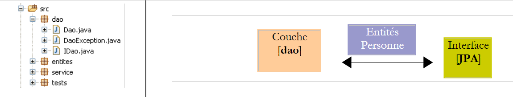 |
Il livello [DAO] implementa l'interfaccia [IDao] descritta in precedenza nella Sezione 3.1.3.
L'implementazione [Dao] di questa interfaccia è la seguente:
package dao;
...
@Stateless
public class Dao implements IDao {
@PersistenceContext
private EntityManager em;
// delete a person via his/her login
@TransactionAttribute(TransactionAttributeType.REQUIRED)
public void deleteOne(Integer id) {
Personne personne = em.find(Personne.class, id);
if (personne == null) {
throw new DaoException(2);
}
em.remove(personne);
}
// get all the people
@TransactionAttribute(TransactionAttributeType.REQUIRED)
public List<Personne> getAll() {
return em.createQuery("select p from Personne p").getResultList();
}
// get people whose names match a model
@TransactionAttribute(TransactionAttributeType.REQUIRED)
public List<Personne> getAllLike(String modele) {
return em.createQuery("select p from Personne p where p.nom like :modele")
.setParameter("modele", modele).getResultList();
}
// find a person via his/her login
@TransactionAttribute(TransactionAttributeType.REQUIRED)
public Personne getOne(Integer id) {
return em.find(Personne.class, id);
}
// save a person
@TransactionAttribute(TransactionAttributeType.REQUIRED)
public Personne saveOne(Personne personne) {
em.persist(personne);
return personne;
}
// update a person
@TransactionAttribute(TransactionAttributeType.REQUIRED)
public Personne updateOne(Personne personne) {
return em.merge(personne);
}
}
- Questo codice è identico in tutto e per tutto a quello che avevamo con Spring. Sono cambiate solo le annotazioni Java, ed è proprio di questo che stiamo parlando.
- Riga 4: L'annotazione @Stateless rende la classe [Dao] un EJB stateless. L'annotazione @Stateful rende una classe un EJB stateful. Un EJB stateful ha campi privati i cui valori devono essere conservati nel tempo. Un esempio classico è una classe che contiene informazioni relative all’utente di un’applicazione web. Un’istanza di questa classe è associata a un utente specifico e, quando il thread di esecuzione della richiesta di quell’utente è completato, l’istanza deve essere conservata in modo da essere disponibile per la richiesta successiva proveniente dallo stesso client. Un EJB @Stateless non ha stato. Utilizzando lo stesso esempio, al termine del thread di esecuzione della richiesta di un utente, l'EJB @Stateless entra a far parte di un pool di EJB @Stateless e diventa disponibile per il thread di esecuzione della richiesta di un altro utente.
- Per lo sviluppatore, il concetto di un EJB3 @Stateless è simile a quello di un singleton Spring. Viene utilizzato negli stessi scenari.
- Riga 7: L'annotazione @PersistenceContext è la stessa di quella incontrata nella versione Spring del livello [DAO]. Indica il campo che conterrà l'EntityManager, il quale consentirà al livello [DAO] di manipolare il contesto di persistenza.
- Riga 11: L'annotazione @TransactionAttribute applicata a un metodo viene utilizzata per configurare la transazione in cui il metodo verrà eseguito. Ecco alcuni possibili valori per questa annotazione:
- TransactionAttributeType.REQUIRED: il metodo deve essere eseguito all'interno di una transazione. Se una transazione è già stata avviata, le operazioni di persistenza del metodo avvengono al suo interno. In caso contrario, viene creata e avviata una transazione.
- TransactionAttributeType.REQUIRES_NEW: il metodo deve essere eseguito all'interno di una nuova transazione. Questa transazione viene creata e avviata.
- TransactionAttributeType.MANDATORY: il metodo deve essere eseguito all'interno di una transazione esistente. Se non esiste una transazione di questo tipo, viene generata un'eccezione.
- TransactionAttributeType.NEVER: Il metodo non viene mai eseguito all'interno di una transazione.
- ...
L'annotazione avrebbe potuto essere inserita sulla classe stessa:
@Stateless
@TransactionAttribute(TransactionAttributeType.REQUIRED)
public class Dao implements IDao {
L'attributo viene quindi applicato a tutti i metodi della classe.
3.2.4. Il livello [business/servizio]
 |
Il livello [servizio] implementa l'interfaccia [IService] descritta in precedenza nella Sezione 3.1.4. L'implementazione [Servizio] dell'interfaccia [IService] è identica a quella descritta in precedenza nella Sezione 3.1.4, con tre eccezioni:
@Stateless
@TransactionAttribute(TransactionAttributeType.REQUIRED)
public class Service implements IService {
// layer [dao]
@EJB
private IDao dao;
public IDao getDao() {
return dao;
}
public void setDao(IDao dao) {
this.dao = dao;
}
- Riga 2: La classe [Service] è un EJB senza stato
- riga 3: tutti i metodi della classe [Service] devono essere eseguiti all'interno di una transazione
- righe 7–8: un riferimento all'EJB nel livello [dao] verrà iniettato dal contenitore EJB nel campo [IDao dao] alla riga 8. L'annotazione @EJB alla riga 7 richiede questa iniezione. L'oggetto iniettato deve essere un EJB. Questa è una differenza fondamentale rispetto a Spring, dove qualsiasi tipo di oggetto può essere iniettato in un altro oggetto.
3.2.5. Configurazione dei livelli
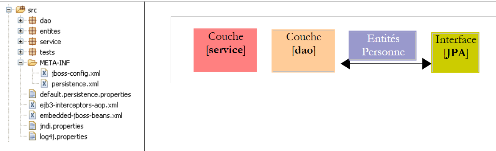 |
La configurazione dei livelli [service], [dao] e [JPA] è gestita dai seguenti file:
- [META-INF/persistence.xml] configura il livello JPA
- [jboss-config.xml] configura il contenitore EJB3. Utilizza i file [default.persistence.properties, ejb3-interceptors-aop.xml, embedded-jboss-beans.xml, jndi.properties]. Questi file sono inclusi in JBoss EJB3 e forniscono una configurazione predefinita che normalmente non viene modificata. Lo sviluppatore deve occuparsi solo del file [jboss-config.xml]
Esaminiamo i due file di configurazione:
persistence.xml
<persistence xmlns="http://java.sun.com/xml/ns/persistence" xmlns:xsi="http://www.w3.org/2001/XMLSchema-instance"
xsi:schemaLocation="http://java.sun.com/xml/ns/persistence
http://java.sun.com/xml/ns/persistence/persistence_1_0.xsd" version="1.0">
<persistence-unit name="jpa">
<!-- the JPA provider is Hibernate -->
<provider>org.hibernate.ejb.HibernatePersistence</provider>
<!-- the DataSource JTA managed by the Java EE5 environment -->
<jta-data-source>java:/datasource</jta-data-source>
<properties>
<!-- search for JBA layer entities -->
<property name="hibernate.archive.autodetection" value="class, hbm" />
<!-- logs SQL Hibernate
<property name="hibernate.show_sql" value="true"/>
<property name="hibernate.format_sql" value="true"/>
<property name="use_sql_comments" value="true"/>
-->
<!-- the type of SGBD managed -->
<property name="hibernate.dialect" value="org.hibernate.dialect.MySQLInnoDBDialect" />
<!-- recreate all tables (drop+create) when the persistence unit is deployed -->
<property name="hibernate.hbm2ddl.auto" value="create" />
</properties>
</persistence-unit>
</persistence>
Questo file è simile a quelli che abbiamo già visto durante lo studio delle entità JPA. Configura un livello JPA di Hibernate. Le nuove funzionalità sono le seguenti:
- riga 5: l'unità di persistenza JPA non presenta l'attributo transaction-type che abbiamo sempre avuto fino ad ora:
<persistence-unit name="jpa" transaction-type="RESOURCE_LOCAL" />
Se non viene specificato alcun valore, l'attributo transaction-type assume il valore predefinito "JTA" (per Java Transaction API), indicando che il gestore delle transazioni è fornito da un contenitore EJB 3. Un gestore "JTA" può fare più di un gestore "RESOURCE_LOCAL": può gestire transazioni che coinvolgono più connessioni. Con JTA, è possibile aprire la transazione t1 sulla connessione c1 sul DB 1, la transazione t2 sulla connessione c2 sul DB 2 e trattare (t1,t2) come un'unica transazione in cui o tutte le operazioni hanno esito positivo (commit) o nessuna (rollback).
Qui stiamo utilizzando il gestore JTA del contenitore JBoss EJB3.
- Riga 11: dichiara l'origine dati che il gestore JTA deve utilizzare. Questa è specificata come nome JNDI (Java Naming and Directory Interface). L'origine dati è definita in [jboss-config.xml].
jboss-config.xml
<?xml version="1.0" encoding="UTF-8"?>
<deployment xmlns:xsi="http://www.w3.org/2001/XMLSchema-instance" xsi:schemaLocation="urn:jboss:bean-deployer bean-deployer_1_0.xsd"
xmlns="urn:jboss:bean-deployer:2.0">
<!-- factory of the DataSource -->
<bean name="datasourceFactory" class="org.jboss.resource.adapter.jdbc.local.LocalTxDataSource">
<!-- name JNDI of DataSource -->
<property name="jndiName">java:/datasource</property>
<!-- managed database -->
<property name="driverClass">com.mysql.jdbc.Driver</property>
<property name="connectionURL">jdbc:mysql://localhost:3306/jpa</property>
<property name="userName">jpa</property>
<property name="password">jpa</property>
<!-- properties connection pool -->
<property name="minSize">0</property>
<property name="maxSize">10</property>
<property name="blockingTimeout">1000</property>
<property name="idleTimeout">100000</property>
<!-- transaction manager, here JTA -->
<property name="transactionManager">
<inject bean="TransactionManager" />
</property>
<!-- hibernate cache manager -->
<property name="cachedConnectionManager">
<inject bean="CachedConnectionManager" />
</property>
<!-- properties instantiation JNDI ? -->
<property name="initialContextProperties">
<inject bean="InitialContextProperties" />
</property>
</bean>
<!-- the DataSource is requested from a factory -->
<bean name="datasource" class="java.lang.Object">
<constructor factoryMethod="getDatasource">
<factory bean="datasourceFactory" />
</constructor>
</bean>
</deployment>
- Riga 3: Il tag radice del file è <deployment>. Questo file di distribuzione è destinato principalmente a configurare la fonte dati java:/datasource dichiarata nel file persistence.xml.
- La fonte dati è definita dal bean "datasource" alla riga 38. Si può notare che la fonte dati viene ottenuta (riga 40) da una "factory" definita dal bean "datasourceFactory" alla riga 7. Per ottenere la fonte dati dell'applicazione, il client deve chiamare il metodo [getDatasource] della factory (riga 39).
- Riga 7: La factory che fornisce la fonte dati è una classe JBoss.
- Riga 9: il nome JNDI della fonte dati. Deve essere lo stesso nome dichiarato nel tag <jta-data-source> nel file persistence.xml. Infatti, il livello JPA utilizzerà questo nome JNDI per richiedere la fonte dati.
- Righe 12–15: qualcosa di più standard: le proprietà JDBC per la connessione al DBMS
- Righe 18–21: Configurazione del pool di connessioni interno del contenitore JBoss EJB3.
- Righe 24–26: il gestore JTA. La classe [TransactionManager] iniettata alla riga 25 è definita nel file [embedded-jboss-beans.xml].
- Righe 28–30: la cache di Hibernate, un concetto che non abbiamo ancora trattato. La classe [CachedConnectionManager] iniettata alla riga 29 è definita nel file [embedded-jboss-beans.xml]. Si noti che la configurazione ora dipende da Hibernate, il che causerà problemi quando vorremo migrare a TopLink.
- Righe 32–34: configurazione del servizio JNDI.
Abbiamo terminato con il file di configurazione JBoss EJB3. È complesso e molti aspetti rimangono poco chiari. È stato tratto da [ref1]. Tuttavia, saremo in grado di adattarlo a un altro DBMS (righe 12–15 di jboss-config.xml, riga 24 di persistence.xml). La migrazione a Toplink non è stata possibile a causa della mancanza di esempi.
3.2.6. Programma client [InitDB]
Ora inizieremo a scrivere il primo client per l'architettura descritta sopra:
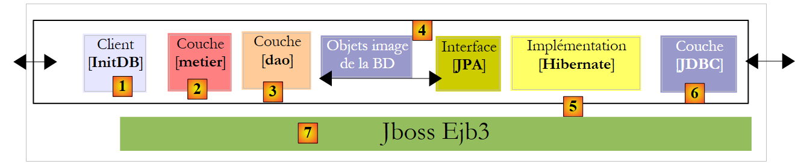 |
Il codice per [InitDB] è il seguente:
package tests;
...
public class InitDB {
// service layer
private static IService service;
// manufacturer
public static void main(String[] args) throws ParseException, NamingException {
// start the EJB3 JBoss container
// configuration files ejb3-interceptors-aop.xml and embedded-jboss-beans.xml are used
EJB3StandaloneBootstrap.boot(null);
// Creating application-specific beans
EJB3StandaloneBootstrap.deployXmlResource("META-INF/jboss-config.xml");
// Deploy all EJBs found on classpath (slow, scans all)
// EJB3StandaloneBootstrap.scanClasspath();
// deploy all EJB found in the application classpath
EJB3StandaloneBootstrap.scanClasspath("bin".replace("/", File.separator));
// The JNDI context is initialized. The jndi.properties file is used
InitialContext initialContext = new InitialContext();
// service layer instantiation
service = (IService) initialContext.lookup("Service/local");
// empty the base
clean();
// fill it
fill();
// a visual check
dumpPersonnes();
// we stop the Ejb container
EJB3StandaloneBootstrap.shutdown();
}
// table content display
private static void dumpPersonnes() {
System.out.format("[personnes]-------------------------------------------------------------------%n");
for (Personne p : service.getAll()) {
System.out.println(p);
}
}
// table filling
public static void fill() throws ParseException {
// creating people
Personne p1 = new Personne("p1", "Paul", new SimpleDateFormat("dd/MM/yy").parse("31/01/2000"), true, 2);
Personne p2 = new Personne("p2", "Sylvie", new SimpleDateFormat("dd/MM/yy").parse("05/07/2001"), false, 0);
// we save
service.saveArray(new Personne[] { p1, p2 });
}
// deleting table items
public static void clean() {
for (Personne p : service.getAll()) {
service.deleteOne(p.getId());
}
}
}
- Il metodo per l'avvio del contenitore JBoss EJB3 è stato trovato in [rif1].
- Riga 13: Il contenitore viene avviato. [EJB3StandaloneBootstrap] è una classe del contenitore.
- Riga 16: L'unità di distribuzione configurata da [jboss-config.xml] viene distribuita nel contenitore: vengono configurati il gestore JTA, l'origine dati, il pool di connessioni, la cache Hibernate e il servizio JNDI.
- Riga 22: Al contenitore viene richiesto di eseguire una scansione della cartella bin del progetto Eclipse per individuare gli EJB. Gli EJB dei livelli [service] e [dao] verranno individuati e gestiti dal contenitore.
- Riga 25: Viene inizializzato un contesto JNDI. Lo useremo per individuare gli EJB.
- Riga 28: L'EJB corrispondente alla classe [Service] nel livello [service] viene richiesto al servizio JNDI. È possibile accedere a un EJB localmente o tramite la rete. Qui, il nome "Service/local" dell'EJB ricercato si riferisce alla classe [Service] nel livello [service] per l'accesso locale.
- Ora l'applicazione è distribuita e disponiamo di un riferimento al livello [service]. Ci troviamo nella stessa situazione che si verifica dopo la riga 11 nel codice [InitDB] della versione Spring. Troviamo quindi lo stesso codice in entrambe le versioni.
public class InitDB {
// service layer
private static IService service;
// manufacturer
public static void main(String[] args) throws ParseException {
// application configuration
ApplicationContext ctx = new ClassPathXmlApplicationContext("spring-config.xml");
// service layer
service = (IService) ctx.getBean("service");
// empty the base
clean();
// fill it
fill();
// a visual check
dumpPersonnes();
}
...
- riga 36 (JBoss EJB3): arrestare il contenitore EJB3.
L'esecuzione di [InitDB] produce i seguenti risultati:
Si invitano i lettori a esaminare questi log. Contengono informazioni interessanti su ciò che fa il contenitore EJB3.
3.2.7. Test unitari [TestNG]
Il codice del programma [TestNG] è il seguente:
package tests;
...
public class TestNG {
// service layer
private IService service = null;
@BeforeClass
public void init() throws NamingException, ParseException {
// log
log("init");
// start the EJB3 JBoss container
// configuration files ejb3-interceptors-aop.xml and embedded-jboss-beans.xml are used
EJB3StandaloneBootstrap.boot(null);
// Creating application-specific beans
EJB3StandaloneBootstrap.deployXmlResource("META-INF/jboss-config.xml");
// Deploy all EJBs found on classpath (slow, scans all)
// EJB3StandaloneBootstrap.scanClasspath();
// deploy all EJB found in the application classpath
EJB3StandaloneBootstrap.scanClasspath("bin".replace("/", File.separator));
// The JNDI context is initialized. The jndi.properties file is used
InitialContext initialContext = new InitialContext();
// service layer instantiation
service = (IService) initialContext.lookup("Service/local");
// empty the base
clean();
// fill it
fill();
// a visual check
dumpPersonnes();
}
@AfterClass
public void terminate() {
// log
log("terminate");
// Shutdown EJB container
EJB3StandaloneBootstrap.shutdown();
}
@BeforeMethod
public void setUp() throws ParseException {
...
}
...
}
- Il metodo init (righe 10–37), che configura l'ambiente necessario per i test, utilizza il codice spiegato in precedenza in [InitDB].
- Il metodo terminate (righe 40–45), che viene eseguito al termine dei test (grazie all'annotazione @AfterClass), arresta il contenitore EJB3 (riga 44).
- Tutto il resto è identico a quanto presente nella versione Spring.
I test vengono superati:

3.2.8. Modifica del DBMS
 |
Per cambiare il DBMS, è sufficiente sostituire il contenuto della cartella [META-INF] [2] con quello della cartella DBMS presente nella cartella [conf] [1]. Prendiamo SQL Server come esempio:
Il file [persistence.xml] è il seguente:
<persistence xmlns="http://java.sun.com/xml/ns/persistence" xmlns:xsi="http://www.w3.org/2001/XMLSchema-instance"
xsi:schemaLocation="http://java.sun.com/xml/ns/persistence
http://java.sun.com/xml/ns/persistence/persistence_1_0.xsd" version="1.0">
<persistence-unit name="jpa">
<!-- the JPA provider is Hibernate -->
<provider>org.hibernate.ejb.HibernatePersistence</provider>
<!-- the DataSource JTA managed by the Java EE5 environment -->
<jta-data-source>java:/datasource</jta-data-source>
<properties>
<!-- search for JBA layer entities -->
<property name="hibernate.archive.autodetection" value="class, hbm" />
<!-- logs SQL Hibernate
<property name="hibernate.show_sql" value="true"/>
<property name="hibernate.format_sql" value="true"/>
<property name="use_sql_comments" value="true"/>
-->
<!-- the type of SGBD managed -->
<property name="hibernate.dialect" value="org.hibernate.dialect.SQLServerDialect" />
<!-- recreate all tables (drop+create) when the persistence unit is deployed -->
<property name="hibernate.hbm2ddl.auto" value="create" />
</properties>
</persistence-unit>
</persistence>
È cambiata solo una riga:
- riga 24: il dialetto SQL che Hibernate deve utilizzare
Il file [jboss-config.xml] di SQL Server è il seguente:
<?xml version="1.0" encoding="UTF-8"?>
<deployment xmlns:xsi="http://www.w3.org/2001/XMLSchema-instance" xsi:schemaLocation="urn:jboss:bean-deployer bean-deployer_1_0.xsd"
xmlns="urn:jboss:bean-deployer:2.0">
<!-- factory of the DataSource -->
<bean name="datasourceFactory" class="org.jboss.resource.adapter.jdbc.local.LocalTxDataSource">
<!-- name JNDI of DataSource -->
<property name="jndiName">java:/datasource</property>
<!-- managed database -->
<property name="driverClass">com.microsoft.sqlserver.jdbc.SQLServerDriver</property>
<property name="connectionURL">jdbc:sqlserver://localhost\\SQLEXPRESS:1246;databaseName=jpa</property>
<property name="userName">jpa</property>
<property name="password">jpa</property>
<!-- properties connection pool -->
...
</bean>
</deployment>
Sono state modificate solo le righe 12-15: specificano le caratteristiche della nuova connessione JDBC.
Si invitano i lettori a ripetere i test descritti per MySQL5 con altri DBMS.
3.2.9. Modifica dell'implementazione JPA
Come accennato in precedenza, non abbiamo trovato alcun esempio di utilizzo del container JBoss EJB3 con TopLink. Al momento della stesura di questo articolo (giugno 2007), non so ancora se questa configurazione sia possibile.
3.3. Altri esempi
Riassumiamo ciò che è stato fatto con l'entità Person. Abbiamo realizzato tre architetture per eseguire gli stessi test:
1 - un'implementazione Spring/Hibernate
 |
2 - un'implementazione Spring/TopLink
 |
3 - un'implementazione JBoss EJB3 / Hibernate
 |
Gli esempi presenti nel tutorial utilizzano queste tre architetture insieme ad altre entità trattate nella prima parte del tutorial:
Categoria - Articolo
 |
- in [1]: la versione Spring/Hibernate
- in [2]: la versione Spring / Toplink
- in [3]: la versione JBoss EJB3 / Hibernate
Persona - Indirizzo - Attività
 |
- in [1]: la versione Spring/Hibernate
- in [2]: la versione Spring/Toplink
- in [3]: la versione JBoss EJB3 / Hibernate
Questi esempi non introducono alcun nuovo concetto architettonico. Si applicano semplicemente a uno scenario in cui vi sono più entità da gestire, con relazioni uno-a-molti o molti-a-molti tra di esse — cosa che gli esempi che utilizzavano l'entità Person non presentavano.
3.4. Esempio 3: Spring / JPA in un'applicazione web
3.4.1. Panoramica
Qui riprendiamo un'applicazione presentata nel seguente documento:
[rif. 4]: Nozioni di base sullo sviluppo web MVC in Java [http://tahe.developpez.com/java/baseswebmvc/].
Questo documento presenta le nozioni di base dello sviluppo web MVC in Java. Per comprendere l'esempio che segue, il lettore dovrebbe avere familiarità con tali nozioni di base. L'applicazione web utilizzerà il server Tomcat. La sua installazione e il suo utilizzo all'interno di Eclipse sono descritti nella Sezione 5.3.
L'applicazione è stata originariamente sviluppata con un livello [DAO] basato sullo strumento iBatis/SQLMap [http://ibatis.apache.org/], che gestiva la mappatura da relazionale a oggetto. Sostituiremo semplicemente iBatis con JPA. L'architettura dell'applicazione sarà la seguente:
 |
L'applicazione web che scriveremo ci consentirà di gestire un gruppo di persone utilizzando quattro operazioni:
- elenco delle persone nel gruppo
- aggiungere una persona al gruppo
- modifica di una persona nel gruppo
- rimuovere una persona dal gruppo
Queste quattro operazioni di base sono comuni in una tabella di database. Le seguenti schermate mostrano le pagine che l'applicazione visualizza all'utente.
 |
 |
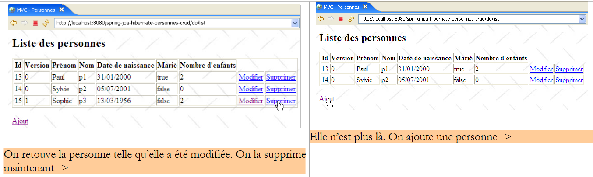 |
 |
 |
3.4.2. Il progetto Eclipse
Il progetto Eclipse per l'applicazione è il seguente:
 |
- in [1]: il progetto web. Si tratta di un progetto Eclipse del tipo [Dynamic Web Project] [2]. È disponibile in [4] nella cartella [3] degli esempi del tutorial. Lo importeremo.
 |
- in [5]: i sorgenti e la configurazione dei livelli [service, dao, jpa]. Manteniamo i componenti [dao, entities, service] esistenti dal progetto Eclipse [hibernate-spring-people-business-dao] discusso nella sezione 3.1.1. Stiamo sviluppando solo il livello [web], rappresentato qui dal pacchetto [web]. Inoltre, manteniamo i file di configurazione [persistence.xml, spring-config.xml] di quel progetto, con l'eccezione che useremo il DBMS Postgres, il che comporta le seguenti modifiche in [spring-config.xml]:
<?xml version="1.0" encoding="UTF-8"?>
<beans xmlns="http://www.springframework.org/schema/beans"
...
<bean id="entityManagerFactory" class="org.springframework.orm.jpa.LocalContainerEntityManagerFactoryBean">
<property name="dataSource" ref="dataSource" />
<property name="jpaVendorAdapter">
...
<property name="databasePlatform" value="org.hibernate.dialect.PostgreSQLDialect" />
...
</property>
...
</bean>
<!-- data source DBCP -->
<bean id="dataSource" class="org.apache.commons.dbcp.BasicDataSource" destroy-method="close">
<property name="driverClassName" value="org.postgresql.Driver" />
<property name="url" value="jdbc:postgresql:jpa" />
<property name="username" value="jpa" />
<property name="password" value="jpa" />
</bean>
....
</beans>
Le righe 8 e 16–19 sono state adattate per Postgres.
- In [6]: la cartella [WebContent] contiene le pagine JSP del progetto e le librerie necessarie. Queste sono elencate in [8]
- L'applicazione può essere utilizzata con vari DBMS. È sufficiente modificare il file [spring-config.xml]. La cartella [conf] [7] contiene il file [spring-config.xml] adattato per vari DBMS.
3.4.3. Il livello [web]
La nostra applicazione presenta la seguente architettura multistrato:
 |
Il livello [web] fornirà all'utente delle schermate che gli consentiranno di gestire il gruppo di persone:
- elenco delle persone nel gruppo
- aggiungere una persona al gruppo
- modifica di una persona nel gruppo
- rimuovere una persona dal gruppo
Per farlo, si affiderà al livello [service], che a sua volta richiamerà il livello [DAO]. Abbiamo già presentato le schermate gestite dal livello [web] (sezione 3.4.1). Per descrivere il livello web, presenteremo di seguito, in ordine:
- la sua configurazione
- le sue viste
- il suo controller
- alcuni test
3.4.3.1. Configurazione dell'applicazione web
Diamo un'occhiata all'architettura del progetto Eclipse:
 |  |
- Nel pacchetto [web] troviamo il controller dell'applicazione web: la classe [Application].
- Le pagine JSP/JSTL dell'applicazione si trovano in [WEB-INF/views].
- La cartella [WEB-INF/lib] contiene le librerie di terze parti richieste dall'applicazione. Sono visibili nella cartella [Web App Libraries].
[web.xml]
Il file [web.xml] è il file utilizzato dal server web per caricare l'applicazione. Il suo contenuto è il seguente:
<?xml version="1.0" encoding="UTF-8"?>
<web-app id="WebApp_ID" version="2.4" xmlns="http://java.sun.com/xml/ns/j2ee" xmlns:xsi="http://www.w3.org/2001/XMLSchema-instance"
xsi:schemaLocation="http://java.sun.com/xml/ns/j2ee http://java.sun.com/xml/ns/j2ee/web-app_2_4.xsd">
<display-name>spring-jpa-hibernate-personnes-crud</display-name>
<!-- ServletPersonne -->
<servlet>
<servlet-name>personnes</servlet-name>
<servlet-class>web.Application</servlet-class>
<init-param>
<param-name>urlEdit</param-name>
<param-value>/WEB-INF/vues/edit.jsp</param-value>
</init-param>
<init-param>
<param-name>urlErreurs</param-name>
<param-value>/WEB-INF/vues/erreurs.jsp</param-value>
</init-param>
<init-param>
<param-name>urlList</param-name>
<param-value>/WEB-INF/vues/list.jsp</param-value>
</init-param>
</servlet>
<!-- Mapping ServletPersonne-->
<servlet-mapping>
<servlet-name>personnes</servlet-name>
<url-pattern>/do/*</url-pattern>
</servlet-mapping>
<!-- welcome files -->
<welcome-file-list>
<welcome-file>index.jsp</welcome-file>
</welcome-file-list>
<!-- Unexpected error page -->
<error-page>
<exception-type>java.lang.Exception</exception-type>
<location>/WEB-INF/vues/exception.jsp</location>
</error-page>
</web-app>
- righe 23-26: gli URL [/do/*] saranno gestiti dal servlet [people]
- righe 7-8: il servlet [personnes] è un'istanza della classe [Application], una classe che creeremo.
- righe 9-20: definiscono tre parametri [urlList, urlEdit, urlErrors] che identificano gli URL delle pagine JSP per le viste [list, edit, errors].
- righe 28-30: l'applicazione ha una pagina di accesso predefinita [index.jsp] situata nella radice della cartella dell'applicazione web.
- righe 32–35: l'applicazione dispone di una pagina di errore predefinita che viene visualizzata quando il server web rileva un'eccezione non gestita dall'applicazione.
- Riga 37: il tag <exception-type> specifica il tipo di eccezione gestita dalla direttiva <error-page>; in questo caso, si tratta del tipo [java.lang.Exception] e dei suoi sottotipi, ovvero tutte le eccezioni.
- Riga 38: il tag <location> specifica la pagina JSP da visualizzare quando si verifica un'eccezione del tipo definito da <exception-type>. L'eccezione verificatasi è disponibile su questa pagina in un oggetto denominato exception se la pagina contiene la direttiva:
<%@ page isErrorPage="true" %>
- (continua)
- Se <exception-type> specifica il tipo T1 e un'eccezione di tipo T2 (non derivata da T1) viene propagata fino al server web, il server invia al client una pagina di eccezione proprietaria, che in genere non è molto intuitiva. Da qui l'importanza del tag <error-page> nel file [web.xml].
[index.jsp]
Questa pagina viene visualizzata se un utente richiede direttamente il contesto dell'applicazione senza specificare un URL, ovvero, in questo caso [/spring-jpa-hibernate-personnes-crud]. Il suo contenuto è il seguente:
<%@ page language="java" pageEncoding="ISO-8859-1" contentType="text/html;charset=ISO-8859-1"%>
<%@ taglib uri="/WEB-INF/c.tld" prefix="c" %>
<c:redirect url="/do/list"/>
[index.jsp] reindirizza (riga 4) il client all'URL [/do/list]. Questo URL visualizza l'elenco delle persone nel gruppo.
3.4.3.2. Le pagine JSP/JSTL dell'applicazione
Serve a visualizzare l'elenco delle persone:
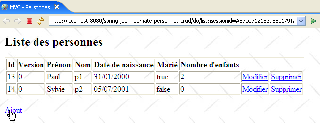
Il codice è il seguente:
<%@ page language="java" pageEncoding="ISO-8859-1" contentType="text/html;charset=ISO-8859-1"%>
<%@ taglib uri="/WEB-INF/c.tld" prefix="c" %>
<%@ taglib uri="/WEB-INF/taglibs-datetime.tld" prefix="dt" %>
<html>
<head>
<title>MVC - Personnes</title>
</head>
<body background="<c:url value="/ressources/standard.jpg"/>">
<c:if test="${erreurs!=null}">
<h3>Les erreurs suivantes se sont produites :</h3>
<ul>
<c:forEach items="${erreurs}" var="erreur">
<li><c:out value="${erreur}"/></li>
</c:forEach>
</ul>
<hr>
</c:if>
<h2>Liste des personnes</h2>
<table border="1">
<tr>
<th>Id</th>
<th>Version</th>
<th>Prénom</th>
<th>Nom</th>
<th>Date de naissance</th>
<th>Marié</th>
<th>Nombre d'enfants</th>
<th></th>
</tr>
<c:forEach var="personne" items="${personnes}">
<tr>
<td><c:out value="${personne.id}"/></td>
<td><c:out value="${personne.version}"/></td>
<td><c:out value="${personne.prenom}"/></td>
<td><c:out value="${personne.nom}"/></td>
<td><dt:format pattern="dd/MM/yyyy">${personne.datenaissance.time}</dt:format></td>
<td><c:out value="${personne.marie}"/></td>
<td><c:out value="${personne.nbenfants}"/></td>
<td><a href="<c:url value="/do/edit?id=${personne.id}"/>">Modifier</a></td>
<td><a href="<c:url value="/do/delete?id=${personne.id}"/>">Supprimer</a></td>
</tr>
</c:forEach>
</table>
<br>
<a href="<c:url value="/do/edit?id=-1"/>">Ajout</a>
</body>
</html>
- Questa vista riceve due elementi nel proprio modello:
- l'elemento [people] associato a una [List] di oggetti [Person]: un elenco di persone.
- l'elemento opzionale [errors] associato a una [List] di oggetti [String]: un elenco di messaggi di errore.
- Righe 31–43: Eseguiamo un'iterazione sull'elenco ${people} per visualizzare una tabella HTML contenente le persone del gruppo.
- riga 40: l'URL a cui punta il link [Modifica] viene impostato utilizzando il campo [id] della persona corrente in modo che il controller associato all'URL [/do/edit] sappia quale persona modificare.
- riga 41: lo stesso viene fatto per il link [Delete].
- riga 37: per visualizzare la data di nascita della persona nel formato GG/MM/AAAA, utilizziamo il tag <dt> della libreria di tag [DateTime] del progetto Apache [Jakarta Taglibs]:
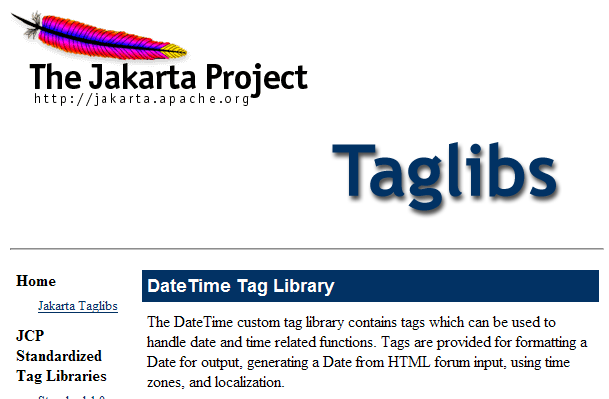
Il file di descrizione per questa libreria di tag è definito alla riga 3.
- Riga 46: il link [Add] per l'aggiunta di una nuova persona punta all'URL [/do/edit], proprio come il link [Edit] alla riga 40. Il valore -1 per il parametro [id] indica che si tratta di un'aggiunta piuttosto che di una modifica.
- Righe 10–18: se nel modello è presente l'elemento ${errors}, vengono visualizzati i messaggi di errore in esso contenuti.
Viene utilizzata per visualizzare il modulo per l'aggiunta di una nuova persona o la modifica di una esistente:
 |
Il codice per la vista [edit.jsp] è il seguente:
<%@ page language="java" pageEncoding="ISO-8859-1" contentType="text/html;charset=ISO-8859-1"%>
<%@ taglib uri="/WEB-INF/c.tld" prefix="c" %>
<%@ taglib uri="/WEB-INF/taglibs-datetime.tld" prefix="dt" %>
<html>
<head>
<title>MVC - Personnes</title>
</head>
<body background="../ressources/standard.jpg">
<h2>Ajout/Modification d'une personne</h2>
<c:if test="${erreurEdit!=''}">
<h3>Echec de la mise à jour :</h3>
L'erreur suivante s'est produite : ${erreurEdit}
<hr>
</c:if>
<form method="post" action="<c:url value="/do/validate"/>">
<table border="1">
<tr>
<td>Id</td>
<td>${id}</td>
</tr>
<tr>
<td>Version</td>
<td>${version}</td>
</tr>
<tr>
<td>Prénom</td>
<td>
<input type="text" value="${prenom}" name="prenom" size="20">
</td>
<td>${erreurPrenom}</td>
</tr>
<tr>
<td>Nom</td>
<td>
<input type="text" value="${nom}" name="nom" size="20">
</td>
<td>${erreurNom}</td>
</tr>
<tr>
<td>Date de naissance (JJ/MM/AAAA)</td>
<td>
<input type="text" value="${datenaissance}" name="datenaissance">
</td>
<td>${erreurDateNaissance}</td>
</tr>
<tr>
<td>Marié</td>
<td>
<c:choose>
<c:when test="${marie}">
<input type="radio" name="marie" value="true" checked>Oui
<input type="radio" name="marie" value="false">Non
</c:when>
<c:otherwise>
<input type="radio" name="marie" value="true">Oui
<input type="radio" name="marie" value="false" checked>Non
</c:otherwise>
</c:choose>
</td>
</tr>
<tr>
<td>Nombre d'enfants</td>
<td>
<input type="text" value="${nbenfants}" name="nbenfants">
</td>
<td>${erreurNbEnfants}</td>
</tr>
</table>
<br>
<input type="hidden" value="${id}" name="id">
<input type="hidden" value="${version}" name="version">
<input type="submit" value="Valider">
<a href="<c:url value="/do/list"/>">Annuler</a>
</form>
</body>
</html>
Questa vista mostra un modulo per aggiungere una nuova persona o aggiornare una esistente. D'ora in poi, per semplificare il testo, useremo il termine unico [aggiornamento]. Il pulsante [Invia] (riga 73) attiva una richiesta POST all'URL [/do/validate] (riga 16). Se la richiesta POST fallisce, viene nuovamente visualizzata la vista [edit.jsp] con gli errori verificatisi; in caso contrario, viene visualizzata la vista [list.jsp].
- La vista [edit.jsp], che viene visualizzata sia in seguito a una richiesta GET che a una richiesta POST fallita, riceve i seguenti elementi nel proprio modello:
attributo | GET | POST |
ID della persona che viene aggiornata | stesso | |
la sua versione | stesso | |
nome | Nome inserito | |
il suo cognome | Cognome inserito | |
la sua data di nascita | data di nascita inserita | |
stato civile | stato civile | |
numero di figli | numero di figli inserito | |
vuoto | un messaggio di errore che indica che l'aggiunta o la modifica al momento del POST ha attivato dal pulsante [Invia]. Vuoto se non ci sono errori. | |
vuoto | indica un nome non corretto – vuoto in caso contrario | |
vuoto | indica un cognome errato – vuoto in caso contrario | |
vuoto | indica una data di nascita errata – vuoto in caso contrario | |
vuoto | indica un numero di figli errato – vuoto in caso contrario |
- righe 11-15: se il POST del modulo fallisce, verrà restituito [errorEdit!=''] e verrà visualizzato un messaggio di errore.
- riga 16: il modulo verrà inviato all'URL [/do/validate]
- riga 20: viene visualizzato l'elemento [id] del template
- riga 24: viene visualizzato l'elemento [version] del template
- righe 26-32: inserimento del nome della persona:
- Quando il modulo viene visualizzato inizialmente (GET), ${firstName} mostra il valore corrente del campo [firstName] dell'oggetto [Person] aggiornato, mentre ${firstNameError} è vuoto.
- in caso di errore dopo il POST, viene visualizzato nuovamente il valore inserito ${firstName}, insieme a qualsiasi messaggio di errore ${firstNameError}
- righe 33-39: inserimento del cognome della persona
- righe 40–46: inserimento della data di nascita della persona
- Righe 47–61: inserimento dello stato civile della persona tramite un pulsante di opzione. Il valore del campo [married] dell'oggetto [Person] viene utilizzato per determinare quale dei due pulsanti di opzione debba essere selezionato.
- righe 62-68: inserimento del numero di figli della persona
- riga 71: un campo HTML nascosto denominato [id] con un valore uguale al campo [id] della persona che si sta aggiornando, -1 per un'aggiunta o un altro valore per una modifica.
- riga 72: un campo HTML nascosto denominato [version] con un valore uguale al campo [id] della persona che si sta aggiornando.
- Riga 73: il pulsante [Invia] del modulo
- riga 74: un link per tornare all'elenco delle persone. È etichettato [Cancel] perché consente di uscire dal modulo senza inviarlo.
Questa pagina viene utilizzata per visualizzare un messaggio che indica che si è verificata un'eccezione non gestita dall'applicazione e che è stata propagata al server web.
Ad esempio, proviamo a eliminare una persona che non esiste nel gruppo:
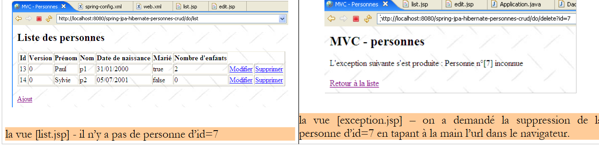 |
Il codice per la vista [exception.jsp] è il seguente:
<%@ page language="java" pageEncoding="ISO-8859-1" contentType="text/html;charset=ISO-8859-1"%>
<%@ taglib uri="/WEB-INF/c.tld" prefix="c" %>
<%@ page isErrorPage="true" %>
<%
response.setStatus(200);
%>
<html>
<head>
<title>MVC - Personnes</title>
</head>
<body background="<c:url value="/ressources/standard.jpg"/>">
<h2>MVC - personnes</h2>
L'exception suivante s'est produite :
<%= exception.getMessage()%>
<br><br>
<a href="<c:url value="/do/list"/>">Retour à la liste</a>
</body>
</html>
- Questa vista riceve una chiave nel proprio template, l'elemento [exception], che rappresenta l'eccezione intercettata dal server web. Affinché questo elemento venga incluso nel template della pagina JSP dal server web, la pagina deve avere definito il tag alla riga 3.
- Riga 6: Il codice di stato HTTP della risposta è impostato su 200. Questa è la prima intestazione HTTP nella risposta. Il codice 200 indica al client che la sua richiesta è stata soddisfatta. In genere, nella risposta del server è incluso un documento HTML. È così anche in questo caso. Se il codice di stato HTTP della risposta non è impostato su 200, qui avrà il valore 500, il che significa che si è verificato un errore. Infatti, quando il server web intercetta un'eccezione non gestita, la considera una situazione anomala e la segnala con un codice 500. La risposta a un codice HTTP 500 varia a seconda del browser: Firefox visualizza il documento HTML che può accompagnare questa risposta, mentre IE ignora questo documento e visualizza la propria pagina. Questo è il motivo per cui abbiamo sostituito il codice 500 con il codice 200.
- Riga 16: Viene visualizzato il testo dell'eccezione
- Riga 18: All'utente viene offerto un link per tornare all'elenco delle persone
Viene utilizzata per visualizzare una pagina che riporta gli errori di inizializzazione dell'applicazione, ovvero gli errori rilevati durante l'esecuzione del metodo [init] del servlet controller. Potrebbe trattarsi, ad esempio, dell'assenza di un parametro nel file [web.xml], come mostrato nell'esempio seguente:

Il codice della pagina [errors.jsp] è il seguente:
<%@ page language="java" contentType="text/html; charset=ISO-8859-1"
pageEncoding="ISO-8859-1"%>
<!DOCTYPE HTML PUBLIC "-//W3C//DTD HTML 4.01 Transitional//EN">
<%@ taglib uri="/WEB-INF/c.tld" prefix="c" %>
<html>
<head>
<title>MVC - Personnes</title>
</head>
<body>
<h2>Les erreurs suivantes se sont produites</h2>
<ul>
<c:forEach var="erreur" items="${erreurs}">
<li>${erreur}</li>
</c:forEach>
</ul>
</body>
</html>
La pagina riceve un elemento [errors] nel proprio template, che è un [ArrayList] di oggetti [String]; questi sono messaggi di errore. Vengono visualizzati dal ciclo nelle righe 13–15.
3.4.3.3. Il controller dell'applicazione
Il controller [Application] è definito nel pacchetto [web]:

Struttura tura e inizializzazione del controller
Lo scheletro del controller [Application] è il seguente:
package web;
...
@SuppressWarnings("serial")
public class Application extends HttpServlet {
// instance parameters
private String urlErreurs = null;
private ArrayList erreursInitialisation = new ArrayList<String>();
private String[] paramètres = { "urlList", "urlEdit", "urlErreurs" };
private Map params = new HashMap<String, String>();
// service
private IService service = null;
// init
@SuppressWarnings("unchecked")
public void init() throws ServletException {
// retrieve servlet initialization parameters
ServletConfig config = getServletConfig();
// other initialization parameters are processed
String valeur = null;
for (int i = 0; i < paramètres.length; i++) {
// parameter value
valeur = config.getInitParameter(paramètres[i]);
// present parameter?
if (valeur == null) {
// we note the error
erreursInitialisation.add("Le paramètre [" + paramètres[i] + "] n'a pas été initialisé");
} else {
// parameter value is stored
params.put(paramètres[i], valeur);
}
}
// the [errors] view url has a special treatment
urlErreurs = config.getInitParameter("urlErreurs");
if (urlErreurs == null)
throw new ServletException("Le paramètre [urlErreurs] n'a pas été initialisé");
// application configuration
ApplicationContext ctx = new ClassPathXmlApplicationContext("spring-config.xml");
// service layer
service = (IService) ctx.getBean("service");
// empty the base
clean();
// fill it
try {
fill();
} catch (ParseException e) {
throw new ServletException(e);
}
}
// table filling
public void fill() throws ParseException {
// creating people
Personne p1 = new Personne("p1", "Paul", new SimpleDateFormat("dd/MM/yy").parse("31/01/2000"), true, 2);
Personne p2 = new Personne("p2", "Sylvie", new SimpleDateFormat("dd/MM/yy").parse("05/07/2001"), false, 0);
// we save
service.saveArray(new Personne[] { p1, p2 });
}
// deleting table items
public void clean() {
for (Personne p : service.getAll()) {
service.deleteOne(p.getId());
}
}
// GET
@SuppressWarnings("unchecked")
public void doGet(HttpServletRequest request, HttpServletResponse response) throws IOException, ServletException {
...
}
// display list of persons
private void doListPersonnes(HttpServletRequest request, HttpServletResponse response) throws ServletException, IOException {
...
}
// modify / add a person
private void doEditPersonne(HttpServletRequest request, HttpServletResponse response) throws ServletException, IOException {
...
}
// deleting a person
private void doDeletePersonne(HttpServletRequest request, HttpServletResponse response) throws ServletException, IOException {
...
}
// validation modification / addition of a person
public void doValidatePersonne(HttpServletRequest request, HttpServletResponse response) throws ServletException, IOException {
...
}
// display pre-filled form
private void showFormulaire(HttpServletRequest request, HttpServletResponse response, String erreurEdit) throws ServletException, IOException {
...
}
// post
public void doPost(HttpServletRequest request, HttpServletResponse response) throws IOException, ServletException {
// we hand over to GET
doGet(request, response);
}
}
- righe 21–34: recuperiamo i parametri specificati nel file [web.xml].
- righe 37-39: il parametro [urlErrors] deve essere presente perché specifica l'URL della vista [errors] in grado di visualizzare eventuali errori di inizializzazione. Se non esiste, l'applicazione viene terminata generando un'eccezione [ServletException] (riga 39). Questa eccezione verrà propagata al server web e gestita dal tag <error-page> nel file [web.xml]. Viene quindi visualizzata la vista [exception.jsp]:

Il link [Torna all'elenco] qui sopra è inattivo. Cliccandoci sopra si ottiene la stessa risposta finché l'applicazione non viene modificata e ricaricata. È utile per altri tipi di eccezioni, come abbiamo già visto.
- Righe 40–43: utilizzare il file di configurazione Spring per recuperare un riferimento al livello [service]. Dopo l'inizializzazione del controller, i suoi metodi dispongono di un riferimento [service] al livello [service] (riga 15) che useranno per eseguire le azioni richieste dall'utente. Queste saranno intercettate dal metodo [doGet], che le farà elaborare da un metodo specifico del controller:
Url | Metodo HTTP | Metodo del controller |
GET | doListPeople | |
GET | doModificaPersona | |
POST | doValidatePerson | |
GET | doDeletePerson |
Il metodo [doGet]
Lo scopo di questo metodo è indirizzare l'elaborazione delle azioni richieste dall'utente al metodo corretto. Il suo codice è il seguente:
// GET
@SuppressWarnings("unchecked")
public void doGet(HttpServletRequest request, HttpServletResponse response) throws IOException, ServletException {
// check how the servlet was initialized
if (erreursInitialisation.size() != 0) {
// we hand over to the error page
request.setAttribute("erreurs", erreursInitialisation);
getServletContext().getRequestDispatcher(urlErreurs).forward(request, response);
// end
return;
}
// retrieve the request sending method
String méthode = request.getMethod().toLowerCase();
// retrieve the action to be executed
String action = request.getPathInfo();
// action?
if (action == null) {
action = "/list";
}
// execution action
if (méthode.equals("get") && action.equals("/list")) {
// list of persons
doListPersonnes(request, response);
return;
}
if (méthode.equals("get") && action.equals("/delete")) {
// deleting a person
doDeletePersonne(request, response);
return;
}
if (méthode.equals("get") && action.equals("/edit")) {
// presentation form add / modify a person
doEditPersonne(request, response);
return;
}
if (méthode.equals("post") && action.equals("/validate")) {
// validation form add / modify a person
doValidatePersonne(request, response);
return;
}
// other cases
doListPersonnes(request, response);
}
- righe 7–13: Verifichiamo che l'elenco degli errori di inizializzazione sia vuoto. Se non lo è, visualizziamo la vista [errors(errors)], che segnalerà gli errori.
- riga 15: Recuperiamo il metodo [get] o [post] che il client ha utilizzato per effettuare la richiesta.
- riga 17: recuperiamo il valore del parametro [action] dalla richiesta.
- Righe 23–27: Elaboriamo la richiesta [GET /do/list], che richiede l'elenco delle persone.
- Righe 28–32: Elaborazione della richiesta [GET /do/delete], che richiede la cancellazione di una persona.
- Righe 33–37: Elaborazione della richiesta [GET /do/edit], che richiede il modulo per aggiornare una persona.
- Righe 38–42: elaborazione della richiesta [POST /do/validate], che richiede la convalida della persona aggiornata.
- Riga 44: se l'azione richiesta non è una delle cinque precedenti, la trattiamo come se fosse [GET /do/list].
Il metodo [doListPersonnes]
Questo metodo gestisce la richiesta [GET /do/list], che richiede l'elenco delle persone:
Il codice è il seguente:
// display list of persons
private void doListPersonnes(HttpServletRequest request, HttpServletResponse response) throws ServletException, IOException {
// the [list] view model
request.setAttribute("personnes", service.getAll());
// list] view display
getServletContext().getRequestDispatcher((String) params.get("urlList")).forward(request, response);
}
- Riga 4: Richiediamo l'elenco delle persone del gruppo dal livello [service] e lo memorizziamo nel modello sotto la chiave "people".
- Riga 6: viene visualizzata la vista [list.jsp] descritta nella sezione 3.4.3.2.
Il metodo [doDeletePerson]
Questo metodo gestisce la richiesta [GET /do/delete?id=XX], che richiede l'eliminazione della persona con id=XX. L'URL [/do/delete?id=XX] è quello dei link [Delete] nella vista [list.jsp]:

il cui codice è il seguente:
...
<html>
<head>
<title>MVC - Personnes</title>
</head>
<body background="<c:url value="/ressources/standard.jpg"/>">
...
<c:forEach var="personne" items="${personnes}">
<tr>
...
<td><a href="<c:url value="/do/edit?id=${personne.id}"/>">Modifier</a></td>
<td><a href="<c:url value="/do/delete?id=${personne.id}"/>">Supprimer</a></td>
</tr>
</c:forEach>
</table>
<br>
<a href="<c:url value="/do/edit?id=-1"/>">Ajout</a>
</body>
</html>
La riga 12 mostra l'URL [/do/delete?id=XX] per il link [Elimina]. Il metodo [doDeletePerson], che gestisce questo URL, deve eliminare la persona con id=XX e quindi visualizzare l'elenco aggiornato delle persone nel gruppo. Il suo codice è il seguente:
// deleting a person
private void doDeletePersonne(HttpServletRequest request, HttpServletResponse response) throws ServletException, IOException {
// retrieve the person's id
int id = Integer.parseInt(request.getParameter("id"));
// we delete the person
service.deleteOne(id);
// redirects to the list of persons
response.sendRedirect("list");
}
- Riga 4: L'URL in elaborazione ha il formato [/do/delete?id=XX]. Recuperiamo il valore [XX] dal parametro [id].
- Riga 6: chiediamo al livello [service] di eliminare la persona con l'ID ottenuto. Non eseguiamo alcuna convalida. Se la persona che stiamo cercando di eliminare non esiste, il livello [dao] genera un'eccezione che viene propagata fino al livello [service]. Non la gestiamo nemmeno qui nel controller. Si propagherà quindi fino al server web, il quale, in base alla configurazione, visualizzerà la pagina [exception.jsp], descritta nella sezione 3.4.3.2:
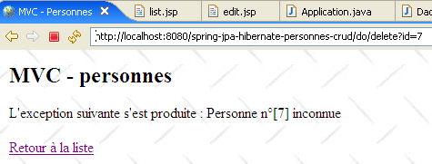
- Riga 9: Se l'eliminazione è andata a buon fine (nessuna eccezione), il client viene reindirizzato all'URL relativo [list]. Poiché l'URL appena elaborato era [/do/delete], l'URL di reindirizzamento sarà [/do/list]. Il browser effettuerà quindi una richiesta [GET /do/list], che visualizzerà l'elenco delle persone.
Il metodo [doEditPerson]
Questo metodo gestisce la richiesta [GET /do/edit?id=XX], che recupera il modulo per l'aggiornamento della persona con id=XX. L'URL [/do/edit?id=XX] viene utilizzato per i link [Modifica] e [Aggiungi] nella vista [list.jsp]:

il cui codice è il seguente:
...
<html>
<head>
<title>MVC - Personnes</title>
</head>
<body background="<c:url value="/ressources/standard.jpg"/>">
...
<c:forEach var="personne" items="${personnes}">
<tr>
...
<td><a href="<c:url value="/do/edit?id=${personne.id}"/>">Modifier</a></td>
<td><a href="<c:url value="/do/delete?id=${personne.id}"/>">Supprimer</a></td>
</tr>
</c:forEach>
</table>
<br>
<a href="<c:url value="/do/edit?id=-1"/>">Ajout</a>
</body>
</html>
Alla riga 11, vediamo l'URL [/do/edit?id=XX] per il link [Modifica], e alla riga 17, l'URL [/do/edit?id=-1] per il link [Aggiungi]. Il metodo [doEditPersonne] deve visualizzare il modulo di modifica per la persona con id=XX, oppure, se si tratta di un'aggiunta, presentare un modulo vuoto.
 |
- In [1] sopra, il modulo di aggiunta, e in [2], il modulo di modifica.
Il codice per il metodo [doEditPerson] è il seguente:
// modify / add a person
private void doEditPersonne(HttpServletRequest request, HttpServletResponse response) throws ServletException, IOException {
// retrieve the person's id
int id = Integer.parseInt(request.getParameter("id"));
// addition or modification?
Personne personne = null;
if (id != -1) {
// modification - the person to be modified is retrieved
personne = service.getOne(id);
request.setAttribute("id", personne.getId());
request.setAttribute("version", personne.getVersion());
} else {
// add - create an empty person
personne = new Personne();
request.setAttribute("id", -1);
request.setAttribute("version", -1);
}
// we put the [Person] object in the user's session
request.getSession().setAttribute("personne", personne);
// and in the view model [edit]
request.setAttribute("erreurEdit", "");
request.setAttribute("prenom", personne.getPrenom());
request.setAttribute("nom", personne.getNom());
Date dateNaissance = personne.getDatenaissance();
if (dateNaissance != null) {
request.setAttribute("datenaissance", new SimpleDateFormat("dd/MM/yyyy").format(dateNaissance));
} else {
request.setAttribute("datenaissance", "");
}
request.setAttribute("marie", personne.isMarie());
request.setAttribute("nbenfants", personne.getNbenfants());
// view display [edit]
getServletContext().getRequestDispatcher((String) params.get("urlEdit")).forward(request, response);
}
- La richiesta GET punta a un URL del tipo [/do/edit?id=XX]. Alla riga 4, recuperiamo il valore di [id]. A questo punto si presentano due casi:
- Se id non è uguale a -1, si tratta di un aggiornamento e dobbiamo visualizzare un modulo precompilato con le informazioni della persona da aggiornare. Alla riga 9, questa persona viene richiesta dal livello [service].
- id è uguale a -1. In questo caso, si tratta di un'aggiunta e deve essere visualizzato un modulo vuoto. A tal fine, alla riga 14 viene creata una persona vuota.
- In entrambi i casi, vengono inizializzati gli elementi [id, version] del modello di pagina [edit.jsp] descritto nella sezione 3.4.3.2.
- L'oggetto [Person] risultante viene inserito nel modello di pagina [edit.jsp]. Questo modello include i seguenti elementi: [errorEdit, id, version, firstName, errorFirstName, lastName, errorLastName, birthDate, errorBirthDate, married, numberOfChildren, errorNumberOfChildren]. Questi elementi vengono inizializzati alle righe 19–31, ad eccezione di quelli il cui valore è la stringa vuota [erreurPrenom, erreurNom, erreurDateNaissance, erreurNbEnfants]. Sappiamo che se sono assenti dal modello, la libreria JSTL visualizzerà una stringa vuota come loro valore. Sebbene anche l'elemento [errorEdit] abbia come valore una stringa vuota, viene comunque inizializzato perché viene eseguito un controllo sul suo valore nella pagina [edit.jsp].
- Una volta che il modello è pronto, il controllo passa alla pagina [edit.jsp], riga 33, che genererà la vista [edit].
Il metodo [doValidatePersonne]
Questo metodo gestisce la richiesta [POST /do/validate], che convalida il modulo di aggiornamento. Questo POST viene attivato dal pulsante [Validate]:
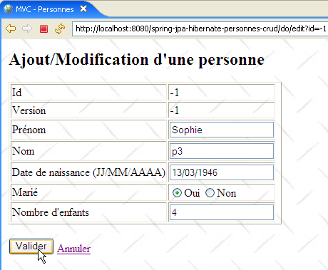
Esaminiamo gli elementi di input del modulo HTML nella vista sopra:
<form method="post" action="<c:url value="/do/validate"/>">
...
<input type="text" value="${nom}" name="nom" size="20">
...
<input type="text" value="${datenaissance}" name="datenaissance">
...
<c:choose>
<c:when test="${marie}">
<input type="radio" name="marie" value="true" checked>Oui
<input type="radio" name="marie" value="false">Non
</c:when>
<c:otherwise>
<input type="radio" name="marie" value="true">Oui
<input type="radio" name="marie" value="false" checked>Non
</c:otherwise>
</c:choose>
...
<input type="text" value="${nbenfants}" name="nbenfants">
...
<input type="hidden" value="${id}" name="id">
<input type="hidden" value="${version}" name="version">
<input type="submit" value="Valider">
<a href="<c:url value="/do/list"/>">Annuler</a>
</form>
La richiesta POST contiene i parametri [first_name, last_name, date_of_birth, married_to, number_of_children, id] e viene inviata all'URL [/do/validate] (riga 1). Viene elaborata dal seguente metodo [doValidatePerson]:
// validation modification / addition of a person
public void doValidatePersonne(HttpServletRequest request, HttpServletResponse response) throws ServletException, IOException {
// retrieve posted items
boolean formulaireErroné = false;
boolean erreur;
// first name
String prenom = request.getParameter("prenom").trim();
// valid first name?
if (prenom.length() == 0) {
// we note the error
request.setAttribute("erreurPrenom", "Le prénom est obligatoire");
formulaireErroné = true;
}
// the name
String nom = request.getParameter("nom").trim();
// valid first name?
if (nom.length() == 0) {
// we note the error
request.setAttribute("erreurNom", "Le nom est obligatoire");
formulaireErroné = true;
}
// date of birth
Date datenaissance = null;
try {
datenaissance = new SimpleDateFormat("dd/MM/yyyy").parse(request.getParameter("datenaissance").trim());
} catch (ParseException e) {
// we note the error
request.setAttribute("erreurDateNaissance", "Date incorrecte");
formulaireErroné = true;
}
// marital status
boolean marie = Boolean.parseBoolean(request.getParameter("marie").trim());
// number of children
int nbenfants = 0;
erreur = false;
try {
nbenfants = Integer.parseInt(request.getParameter("nbenfants").trim());
if (nbenfants < 0) {
erreur = true;
}
} catch (NumberFormatException ex) {
// we note the error
erreur = true;
}
// wrong number of children?
if (erreur) {
// we report the error
request.setAttribute("erreurNbEnfants", "Nombre d'enfants incorrect");
formulaireErroné = true;
}
// pERSON ID
int id = Integer.parseInt(request.getParameter("id"));
// is the form incorrect?
if (formulaireErroné) {
// redisplay the form with error messages
showFormulaire(request, response, "");
// finish
return;
}
// the form is correct - we update the person who has been placed in the session
// with information sent by the customer
Personne personne = (Personne)request.getSession().getAttribute("personne");
personne.setDatenaissance(datenaissance);
personne.setMarie(marie);
personne.setNbenfants(nbenfants);
personne.setNom(nom);
personne.setPrenom(prenom);
// persistence
try {
if (id == -1) {
// creation
service.saveOne(personne);
} else {
// update
service.updateOne(personne);
}
} catch (DaoException ex) {
// redisplay the form with the error message
showFormulaire(request, response, ex.getMessage());
// finish
return;
}
// redirects to the list of persons
response.sendRedirect("list");
}
// display pre-filled form
private void showFormulaire(HttpServletRequest request, HttpServletResponse response, String erreurEdit) throws ServletException, IOException {
// prepare the view model [edit]
request.setAttribute("erreurEdit", erreurEdit);
request.setAttribute("id", request.getParameter("id"));
request.setAttribute("version", request.getParameter("version"));
request.setAttribute("prenom", request.getParameter("prenom").trim());
request.setAttribute("nom", request.getParameter("nom").trim());
request.setAttribute("datenaissance", request.getParameter("datenaissance").trim());
request.setAttribute("marie", request.getParameter("marie"));
request.setAttribute("nbenfants", request.getParameter("nbenfants").trim());
// view display [edit]
getServletContext().getRequestDispatcher((String) params.get("urlEdit")).forward(request, response);
}
- righe 7-13: viene recuperato il parametro [firstName] dalla richiesta POST e ne viene verificata la validità. Se non è corretto, l'elemento [firstNameError] viene inizializzato con un messaggio di errore e inserito negli attributi della richiesta.
- righe 15–21: Lo stesso processo viene seguito per il parametro [lastName]
- righe 23–30: Lo stesso processo viene applicato al parametro [dateOfBirth]
- Riga 32: Recuperiamo il parametro [marie]. Non ne verifichiamo la validità perché, in linea di principio, proviene dal valore di un pulsante di opzione. Detto questo, nulla impedisce a un programma di effettuare una richiesta [POST /.../do/validate] accompagnata da un parametro [marie] fittizio. Dovremmo quindi verificare la validità di questo parametro. In questo caso, ci affidiamo alla nostra gestione delle eccezioni, che fa sì che venga visualizzata la pagina [exception.jsp] se il controller non gestisce l'eccezione autonomamente. Pertanto, se la conversione del parametro [marie] in un valore booleano fallisce alla riga 32, verrà generata un'eccezione, con conseguente invio della pagina [exception.jsp] al client. Questo comportamento è quello che ci serve.
- Righe 34–50: Recuperiamo il parametro [nbenfants] e ne controlliamo il valore.
- Riga 52: recuperiamo il parametro [id] senza verificarne il valore
- Righe 54–59: se il modulo non è valido, viene visualizzato nuovamente con i messaggi di errore generati in precedenza
- Righe 62–67: Se è valido, creiamo un nuovo oggetto [Person] utilizzando i campi del modulo
- righe 69–82: la persona viene salvata. L'operazione di salvataggio potrebbe fallire. In un ambiente multiutente, la persona da modificare potrebbe essere stata cancellata o già modificata da qualcun altro. In questo caso, il livello [dao] genererà un'eccezione, che gestiamo qui.
- riga 84: se non si è verificata alcuna eccezione, il client viene reindirizzato all’URL [/do/list] per visualizzare il nuovo stato del gruppo.
- Riga 79: se si è verificata un'eccezione durante il salvataggio, richiediamo che il modulo iniziale venga visualizzato nuovamente, passando il messaggio di errore dell'eccezione (terzo parametro).
Il metodo [showFormulaire] (righe 88–97) costruisce il modello richiesto per la pagina [edit.jsp] utilizzando i valori inseriti (request.getParameter(" ... ")). Ricordiamo che i messaggi di errore sono già stati inseriti nel modello dal metodo [doValidatePersonne]. La pagina [edit.jsp] viene visualizzata alla riga 99.
3.4.4. Test dell'applicazione Web
Nella Sezione 3.4.1 sono stati presentati diversi test. Invitiamo il lettore a eseguirli nuovamente. Qui mostriamo ulteriori schermate che illustrano casi di conflitti di accesso ai dati in un ambiente multiutente:
[Firefox] sarà il browser dell'utente U1. L'utente U1 richiede l'URL [http://localhost:8080/spring-jpa-hibernate-personnes-crud/do/list]:
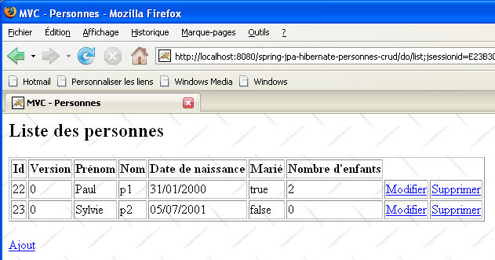
[IE7] sarà il browser dell'utente U2. L'utente U2 richiede lo stesso URL:

L'utente U1 inizia a modificare il record relativo alla persona [p2]:

L'utente U2 fa lo stesso:

L'utente U1 apporta delle modifiche e invia:
 |
L'utente U2 fa lo stesso:
 |
L'utente U2 torna all'elenco delle persone utilizzando il link [Torna all'elenco] presente nel modulo:
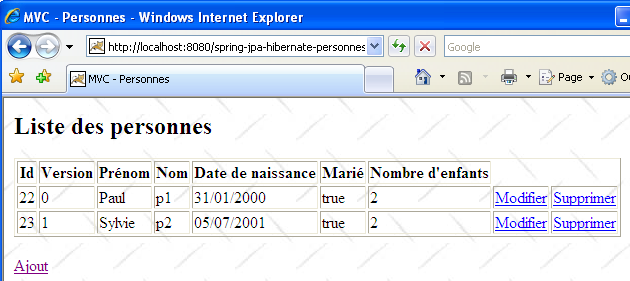
Trova la persona [Lemarchand] modificata da U1 (sposato, 2 figli). Il numero di versione di p2 è cambiato. Ora U2 elimina [p2]:
 |
U1 ha ancora il proprio elenco e vuole modificare nuovamente [p2]:
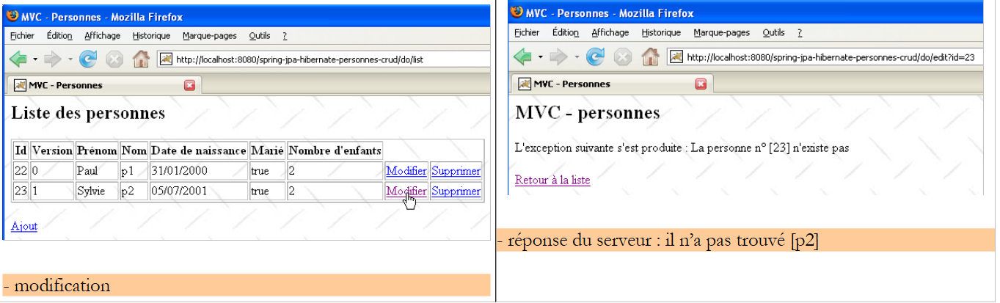 |
U1 utilizza il link [Torna all'elenco] per vedere cosa sta succedendo:
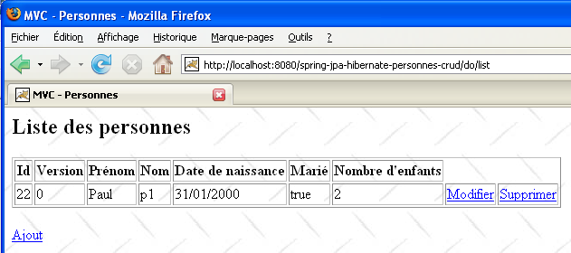
Scopre che [p2] non fa più parte dell'elenco...
3.4.5. Versione 2
Modifichiamo leggermente la versione precedente per utilizzare gli archivi dei livelli [service, dao, jpa] invece del loro codice sorgente:
 |
- in [1]: il nuovo progetto Eclipse. Si noti che i pacchetti [service, dao, entities] non ci sono più. Questi sono stati incapsulati nell'archivio [service-dao-jpa-personne.jar] [2] situato in [WEB-INF/lib].
- La cartella del progetto si trova in [4]. La importeremo.
Non c'è altro da fare. Quando viene avviata la nuova applicazione web e richiediamo l'elenco delle persone, riceviamo la seguente risposta:
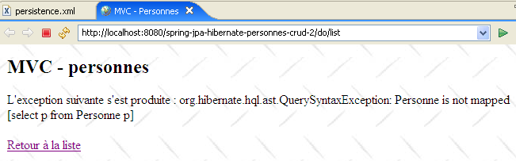 |
Hibernate non riesce a trovare l'entità [Person]. Per risolvere questo problema, è necessario dichiarare esplicitamente le entità gestite nel file [persistence.xml]:
<?xml version="1.0" encoding="UTF-8"?>
<persistence version="1.0"
xmlns="http://java.sun.com/xml/ns/persistence"
xmlns:xsi="http://www.w3.org/2001/XMLSchema-instance"
xsi:schemaLocation="http://java.sun.com/xml/ns/persistence http://java.sun.com/xml/ns/persistence/persistence_1_0.xsd">
<persistence-unit name="jpa" transaction-type="RESOURCE_LOCAL">
<class>entites.Personne</class>
</persistence-unit>
</persistence>
- Riga 7: Viene dichiarata l'entità Person.
Una volta fatto ciò, l'eccezione scompare:
 |
3.4.6. Modifica dell'implementazione JPA
 |
- in [1]: il nuovo progetto Eclipse
- in [2]: le librerie TopLink hanno sostituito le librerie Hibernate
- La cartella del progetto si trova in [4]. La importeremo.
La modifica dell'implementazione JPA comporta solo alcune modifiche nel file [spring-config.xml]. Nient'altro cambia. Le modifiche apportate al file [spring-config.xml] sono state spiegate nella sezione 3.1.9:
<?xml version="1.0" encoding="UTF-8"?>
<!-- the JVM must be launched with the -javaagent:C:\data\2006-2007\eclipse\dvp-jpa\lib\spring\spring-agent.jar argument
(à remplacer par le chemin exact de spring-agent.jar)-->
<beans xmlns="http://www.springframework.org/schema/beans" xmlns:xsi="http://www.w3.org/2001/XMLSchema-instance"
...
<bean id="entityManagerFactory" class="org.springframework.orm.jpa.LocalContainerEntityManagerFactoryBean">
<property name="dataSource" ref="dataSource" />
<property name="jpaVendorAdapter">
<bean class="org.springframework.orm.jpa.vendor.TopLinkJpaVendorAdapter">
...
<property name="databasePlatform" value="oracle.toplink.essentials.platform.database.MySQL4Platform" />
...
</bean>
...
</beans>
Per passare da Hibernate a Toplink è sufficiente modificare poche righe:
- riga 11: l'implementazione JPA è ora gestita da Toplink
- riga 13: la proprietà [databasePlatform] ha un valore diverso rispetto a Hibernate: il nome di una classe specifica di Toplink. Dove trovare questo nome è stato spiegato nella sezione 2.1.15.2.
Questo è tutto. Notate quanto sia facile cambiare DBMS o implementazioni JPA con Spring. Non abbiamo ancora finito, però. Quando si esegue l'applicazione, si verifica un'eccezione:
 |
Si tratta dello stesso problema riscontrato e descritto nella sezione 3.1.9. Si risolve avviando la JVM con un agente Spring. Per farlo, modificate la configurazione di avvio di Tomcat:
 |
- in [1]: abbiamo selezionato l'opzione [Esegui / Esegui...] per modificare la configurazione di Tomcat
- in [2]: abbiamo selezionato la scheda [Argomenti]
- in [3]: abbiamo aggiunto il parametro -javaagent come descritto nella sezione 3.1.9.
Una volta fatto questo, possiamo richiedere l'elenco delle persone:

3.5. Altri esempi
Avremmo voluto mostrare un esempio web in cui il contenitore Spring fosse stato sostituito dal contenitore JBoss EJB3 descritto nella Sezione 3.2:
 |
- in [1]: il progetto Eclipse
- in [3]: la sua posizione nella cartella degli esempi. Lo importeremo.
Abbiamo riutilizzato la configurazione [jboss-config.xml, persistence.xml] descritta nella Sezione 3.2, quindi abbiamo modificato il metodo [init] del controller [Application.java] come segue:
// init
@SuppressWarnings("unchecked")
public void init() throws ServletException {
try {
// retrieve servlet initialization parameters
ServletConfig config = getServletConfig();
// other initialization parameters are processed
String valeur = null;
for (int i = 0; i < paramètres.length; i++) {
// parameter value
valeur = config.getInitParameter(paramètres[i]);
// present parameter?
if (valeur == null) {
// we note the error
erreursInitialisation.add("Le paramètre [" + paramètres[i] + "] n'a pas été initialisé");
} else {
// parameter value is stored
params.put(paramètres[i], valeur);
}
}
// the [errors] view url has a special treatment
urlErreurs = config.getInitParameter("urlErreurs");
if (urlErreurs == null)
throw new ServletException("Le paramètre [urlErreurs] n'a pas été initialisé");
// application configuration
// start the EJB3 JBoss container
// configuration files ejb3-interceptors-aop.xml and embedded-jboss-beans.xml are used
EJB3StandaloneBootstrap.boot(null);
// Creating application-specific beans
EJB3StandaloneBootstrap.deployXmlResource("META-INF/jboss-config.xml");
// deploy all EJB found in the application classpath
//EJB3StandaloneBootstrap.scanClasspath("WEB-INF/classes".replace("/", File.separator));
EJB3StandaloneBootstrap.scanClasspath();
// The JNDI context is initialized. The jndi.properties file is used
InitialContext initialContext = new InitialContext();
// service layer instantiation
service = (IService) initialContext.lookup("Service/local");
// empty the base
clean();
// fill it
fill();
} catch (Exception e) {
throw new ServletException(e);
}
}
- Righe 28–38: Viene avviato il contenitore EJB3. Questo sostituisce il contenitore Spring.
- Riga 41: Richiediamo un riferimento al livello [service] dell'applicazione.
A prima vista, queste sono le uniche modifiche necessarie. All'esecuzione, si verifica il seguente errore:
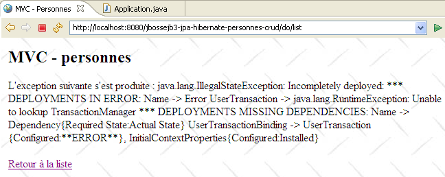 |
Non sono riuscito a individuare con esattezza dove risiedesse il problema. L'eccezione segnalata da Tomcat sembra indicare che l'oggetto denominato "TransactionManager" sia stato richiesto al servizio JNDI, il quale non lo ha riconosciuto. Lascio ai lettori il compito di trovare una soluzione a questo problema. Se verrà trovata una soluzione, verrà inserita in questo documento.